Chapter 5 External Auditors
This chapter is written from External Auditors perspective. Has said that, techniques can be used by other accounting professionals. External auditors usually perform audit procedures on Trial balance throughout the process from audit planning and substantive testing to reporting. Those audit procedures typically include 1) test of control; 2) identification of outlier; 3) ratios; 4) confirmation letters; 5) vouching. For illustration purpose, the audit scope is revenue and account receivables accounts.
5.1 Cleaning
cells <- tidyxl::xlsx_cells(here::here("data/gl_stewart.xlsx")) %>%
dplyr::filter(!is_blank) %>%
select(row, col, data_type, numeric, date, character)
gl <- cells %>%
unpivotr::behead("N", "field1") %>%
select(-col) %>%
unpivotr::spatter(field1) %>%
select(-row) %>%
mutate(account = coalesce(account, bf),
subaccount = coalesce(subaccount, account)) %>%
fill(account, .direction = "down") %>%
fill(subaccount, .direction = "down") %>%
select(account, subaccount, Type, Date, Num, Adj, Name, Memo, Split, Debit, Credit, Balance) %>%
mutate(Date = as.Date(Date, "%Y-%m-%d")) %>%
janitor::clean_names() %>%
replace_na(list(debit = 0, credit = 0, balance = 0))
write.csv(gl, here::here("data/gl.csv"))5.2 Validation
Remove unused column of adj. filter out NA out of column of type as they are subtotal. Transaction dates are within the range of audit period (2018-01-01, 2018-12-31). Control totals of debit and credit is same. Data dictionary and Chart of Accounts (COA) are provided.
gl_df <- read_csv(here::here("data/gl.csv")) %>%
select(-1, -adj) %>%
dplyr::filter(!is.na(type)) %>%
mutate(weekday = lubridate::wday(date, label = TRUE),
month = lubridate::month(date, label = TRUE),
quarter = factor(lubridate::quarter(date)))range(gl_df$date, na.rm = TRUE)> [1] "2018-01-01" "2018-12-31"gl_df %>% select(debit, credit) %>% colSums()> debit credit
> 2136029 2136029dd <- tibble::tribble(~Original, ~Description, ~Rename,
"", "Row number" , "id",
"account", "Charter of Accounts", "account",
"subaccount", "Charter of Accounts", "subaccount",
"type", "Invoice/Payment", "type",
"date", "JV posting date", "date",
"num", "JV number", "num",
"adj", "JV adjustment", "adj",
"name", "Customers/Suppliers", "name",
"memo", "JV description", "memo",
"split", "JV double entries", "split",
"debit", "JV amount", "debit",
"credit", "JV amount", "credit",
"balance", "Cumulated JV amount", "balance",
"weekday", "Mutated variable", "weekday",
"month", "Mutated variable", "month",
"quarter", "Mutated variable", "quarter")
dd %>%
DT::datatable(rownames = FALSE, options = list(paging = TRUE, pageLength = 20))library(collapsibleTree)
gl_df %>%
collapsibleTree(hierarchy = c("account", "subaccount", "name"),
width = 800,
zoomable = TRUE) 5.3 EDA
Columns of split and balance are left untouched. EDA of numeric is based on revenue data.
5.3.1 Missing value
gl_df %>%
summarise(across(everything(), ~formattable::percent(mean(is.na(.))))) %>%
gather()> # A tibble: 14 x 2
> key value
> <chr> <formttbl>
> 1 account 0.00%
> 2 subaccount 0.00%
> 3 type 0.00%
> 4 date 0.00%
> 5 num 6.81%
> 6 name 2.16%
> 7 memo 27.78%
> 8 split 0.00%
> 9 debit 0.00%
> 10 credit 0.00%
> 11 balance 0.00%
> 12 weekday 0.00%
> 13 month 0.00%
> 14 quarter 0.00%gl_df %>% visdat::vis_miss()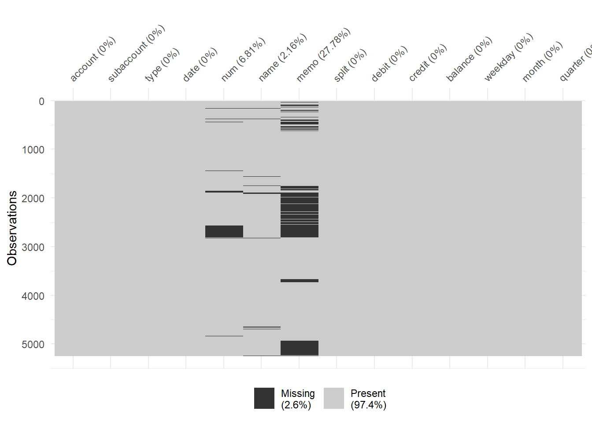
gl_df %>% visdat::vis_dat()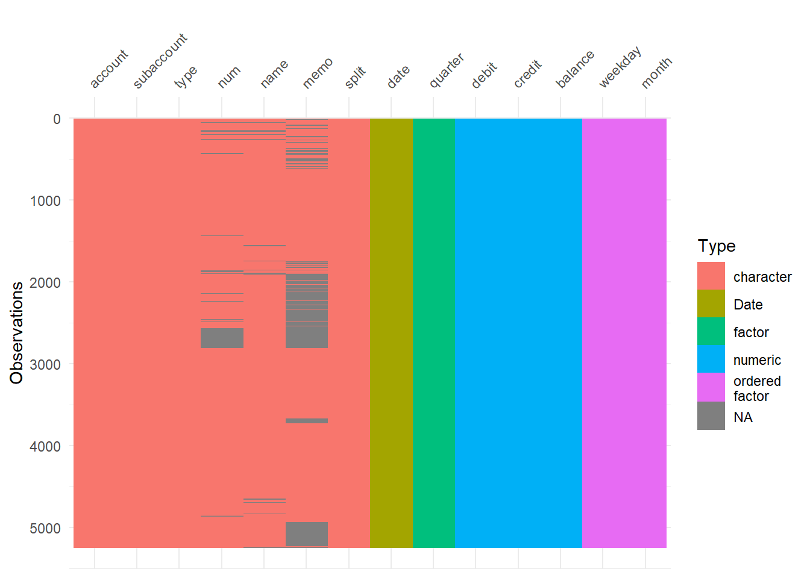
gl_df %>% naniar::gg_miss_upset()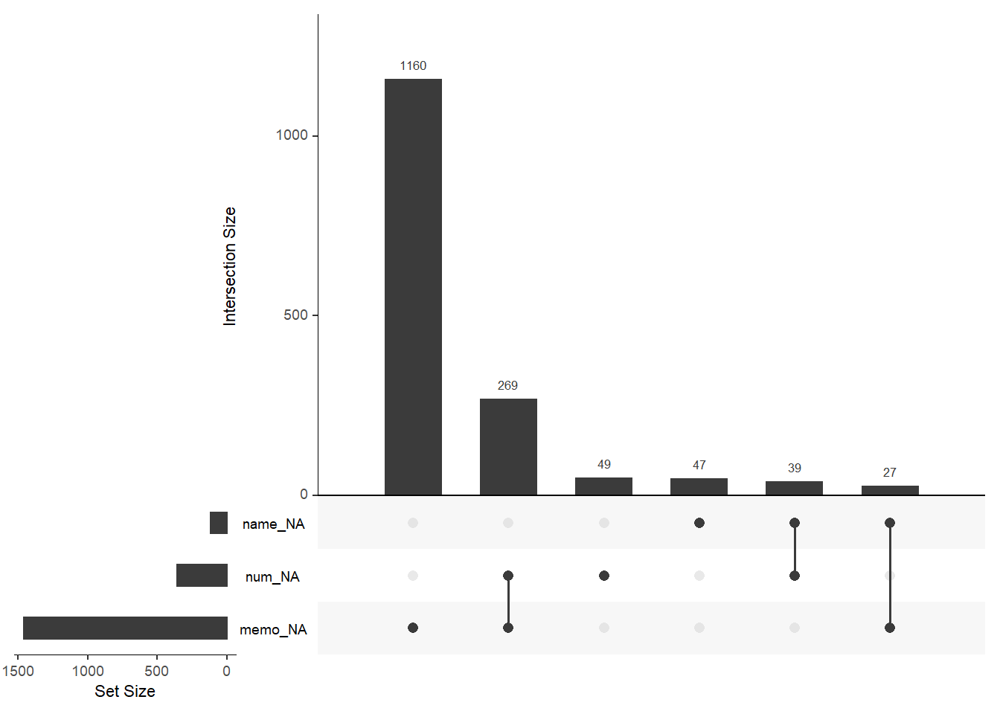
5.3.2 Categorical
gl_df %>%
select(where(is.character)) %>%
map_dbl(~length(unique(.x)))> account subaccount type num name memo split
> 45 62 12 615 111 411 49See to which accounts and subaccounts most of transactions in GL are posted.
actree <- gl_df %>%
group_by(account, subaccount) %>%
summarise(n = n(), .groups = "drop")
png(filename = "img/actree.png", width = 1600, height = 800)
treemap::treemap(actree,
index = c("account", "subaccount"),
vSize = "n",
vColor = "n",
type = "index",
align.labels = list(c("center", "center"), c("right", "bottom")),
fontface.labels = c(1, 3),
fontsize.labels = c(10, 8),
fontcolor.labels = "black",
title = "Charter of Accounts",
fontsize.title = 12,
overlap.labels = 0.5,
inflate.labels = FALSE,
palette = "Set3",
border.col = c("black", "white"),
border.lwds = c(2, 2))
dev.off()knitr::include_graphics("img/actree.png")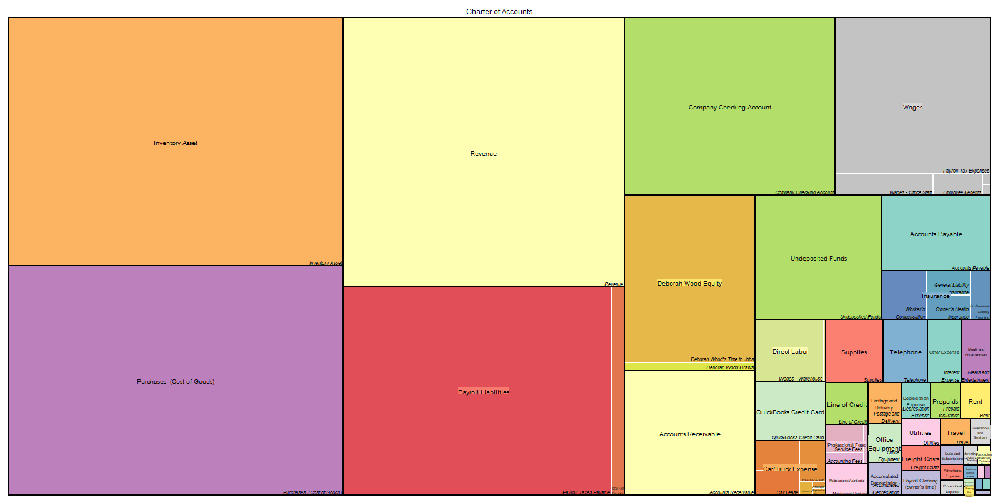
Prepare Trial balance and monthly financial statements out of GL, and then export them to Excel as audit working paper.
tb <- gl_df %>%
group_by(subaccount) %>%
summarise_at(vars(debit, credit), sum)
head(tb)> # A tibble: 6 x 3
> subaccount debit credit
> <chr> <dbl> <dbl>
> 1 Accounting Fees 2544 0
> 2 Accounts Payable 131032. 147729.
> 3 Accounts Receivable 408310. 375976.
> 4 Accumulated Depreciation 0 923.
> 5 Advertising Expense 2000 0
> 6 Business License & Fees 710. 0mth_fs <- gl_df %>%
group_by(account, subaccount, month) %>%
arrange(date) %>%
slice(n()) %>%
ungroup() %>%
select(account, subaccount, month, balance) %>%
pivot_wider(names_from = month,
values_from = balance, values_fill = 0)
head(mth_fs)> # A tibble: 6 x 14
> account subaccount Jan Feb Mar Apr May Jun Jul Aug
> <chr> <chr> <dbl> <dbl> <dbl> <dbl> <dbl> <dbl> <dbl> <dbl>
> 1 Accoun~ Accounts ~ -3.59e4 -45421 -21732. -23299 -3916. -6852. -4067. -4392.
> 2 Accoun~ Accounts ~ 2.24e4 10455. 16399. 16583. 21162. 26078. 38024. 43078.
> 3 Accumu~ Accumulat~ -7.69e1 -154. -231. -308. -385. -462. -538. -615.
> 4 Advert~ Advertisi~ 5 e2 0 0 1000 0 0 1500 0
> 5 Busine~ Business ~ 0 710. 0 0 0 0 0 0
> 6 Car/Tr~ Car Lease 5.63e2 1126 1689 2252 2815 3378 3941 4504
> # ... with 4 more variables: Sep <dbl>, Oct <dbl>, Nov <dbl>, Dec <dbl>library(openxlsx)
ls_df <- list("TB" = tb, "Budget" = mth_fs)
write.xlsx(ls_df, file = "supplements/accountant.xlsx")knitr::include_graphics("img/excel_tb1.png")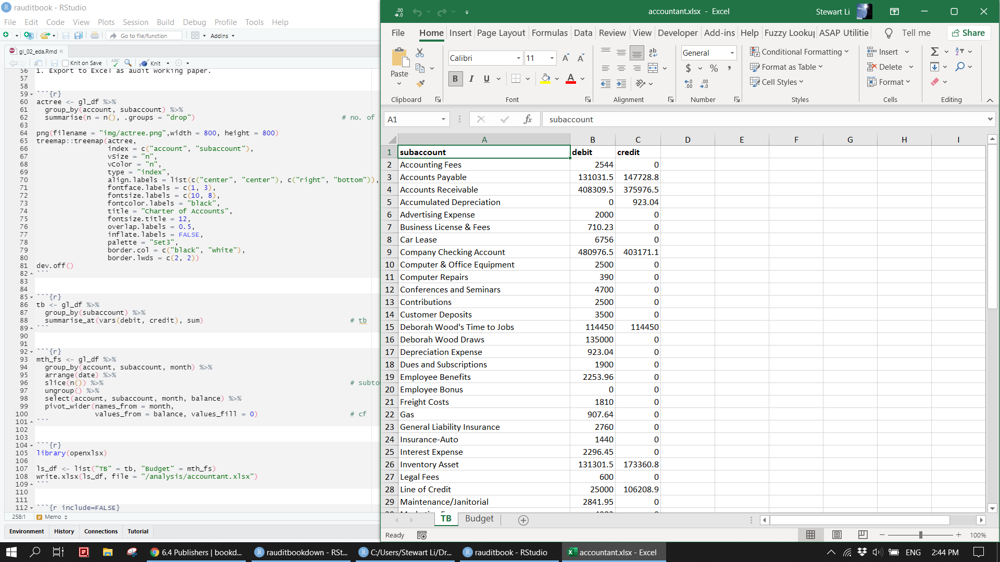
knitr::include_graphics("img/excel_tb2.png")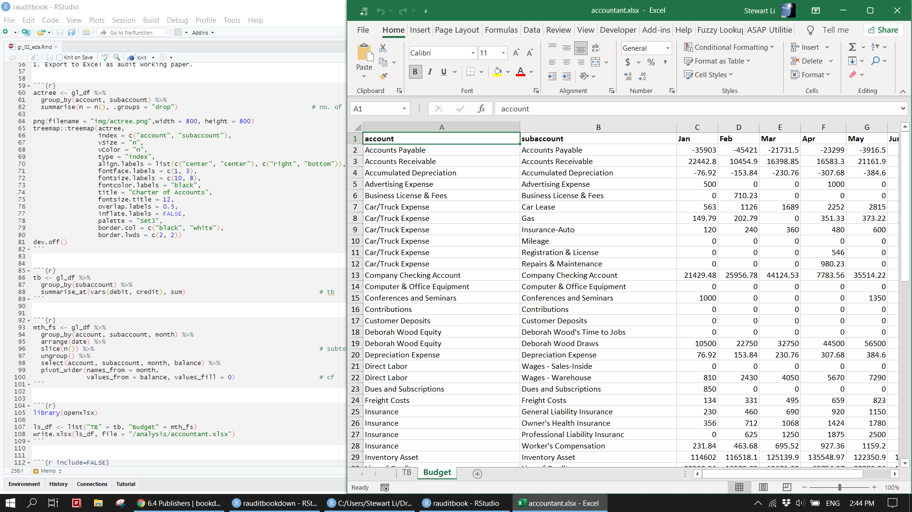
count columns of type and month. summarize debit and credit for each type.
gl_df %>% count(type, sort = TRUE)> # A tibble: 12 x 2
> type n
> <chr> <int>
> 1 Invoice 2632
> 2 Paycheck 1246
> 3 Check 559
> 4 Payment 176
> 5 Bill 166
> 6 Deposit 111
> 7 Liability Check 111
> 8 Bill Pmt -Check 84
> 9 General Journal 72
> 10 Credit Card Charge 68
> 11 Transfer 14
> 12 Inventory Adjust 2gl_df %>%
count(type, account, subaccount, sort = TRUE) %>%
slice(1:3, (n()-3):n())> # A tibble: 7 x 4
> type account subaccount n
> <chr> <chr> <chr> <int>
> 1 Invoice Revenue Revenue 847
> 2 Invoice Inventory Asset Inventory Asset 845
> 3 Invoice Purchases (Cost of Goods) Purchases (Cost of Goods) 845
> 4 Paycheck Car/Truck Expense Mileage 1
> 5 Paycheck Direct Labor Wages - Sales-Inside 1
> 6 Paycheck Wages Employee Bonus 1
> 7 Paycheck Wages Sick/Holiday & Vacation Pay 1gl_df %>%
group_by(type) %>%
summarise(across(c(debit, credit), sum))> # A tibble: 12 x 3
> type debit credit
> * <chr> <dbl> <dbl>
> 1 Bill 147803. 147803.
> 2 Bill Pmt -Check 131032. 131032.
> 3 Check 216938. 216938.
> 4 Credit Card Charge 3454. 3454.
> 5 Deposit 375976. 375976.
> 6 General Journal 9007. 9007.
> 7 Inventory Adjust 375 375
> 8 Invoice 585165. 585165.
> 9 Liability Check 12728. 12728.
> 10 Paycheck 147576. 147576.
> 11 Payment 375976. 375976.
> 12 Transfer 130000 130000table(gl_df$type, gl_df$month) %>% addmargins()>
> Jan Feb Mar Apr May Jun Jul Aug Sep Oct Nov
> Bill 32 19 11 25 4 8 6 9 15 7 9
> Bill Pmt -Check 0 12 12 8 10 6 8 6 2 10 6
> Check 56 49 35 54 45 43 53 55 39 48 45
> Credit Card Charge 6 6 4 10 4 2 6 4 8 6 8
> Deposit 8 10 11 5 12 15 0 16 11 8 0
> General Journal 4 6 6 6 6 6 6 6 6 6 6
> Inventory Adjust 0 0 0 0 0 0 0 0 0 0 0
> Invoice 197 230 175 218 374 348 312 220 113 73 166
> Liability Check 0 9 9 9 16 2 9 9 9 9 9
> Paycheck 40 104 103 101 103 105 104 103 108 107 100
> Payment 6 14 16 20 12 16 16 14 18 12 20
> Transfer 0 2 2 0 2 2 2 2 0 0 2
> Sum 349 461 384 456 588 553 522 444 329 286 371
>
> Dec Sum
> Bill 21 166
> Bill Pmt -Check 4 84
> Check 37 559
> Credit Card Charge 4 68
> Deposit 15 111
> General Journal 8 72
> Inventory Adjust 2 2
> Invoice 206 2632
> Liability Check 21 111
> Paycheck 168 1246
> Payment 12 176
> Transfer 0 14
> Sum 498 5241table(gl_df$type, gl_df$month) %>% margin.table(2)>
> Jan Feb Mar Apr May Jun Jul Aug Sep Oct Nov Dec
> 349 461 384 456 588 553 522 444 329 286 371 498table(gl_df$month)>
> Jan Feb Mar Apr May Jun Jul Aug Sep Oct Nov Dec
> 349 461 384 456 588 553 522 444 329 286 371 498mytable <- table(gl_df$quarter)
lbls <- paste(names(mytable), "\n", mytable, sep = "")
pie(mytable, labels = lbls, main = "Number of transactions\n (for each quarter)")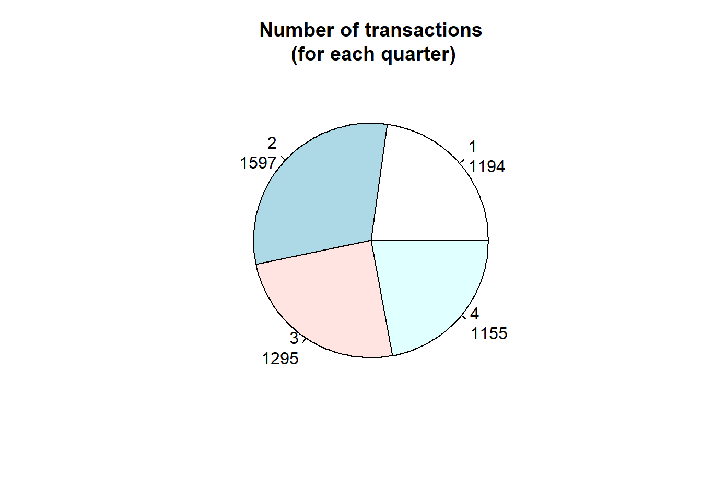
mosaicplot(~ month + weekday, data = gl_df, color = TRUE, las = 1, main = NULL, xlab = "", ylab = "")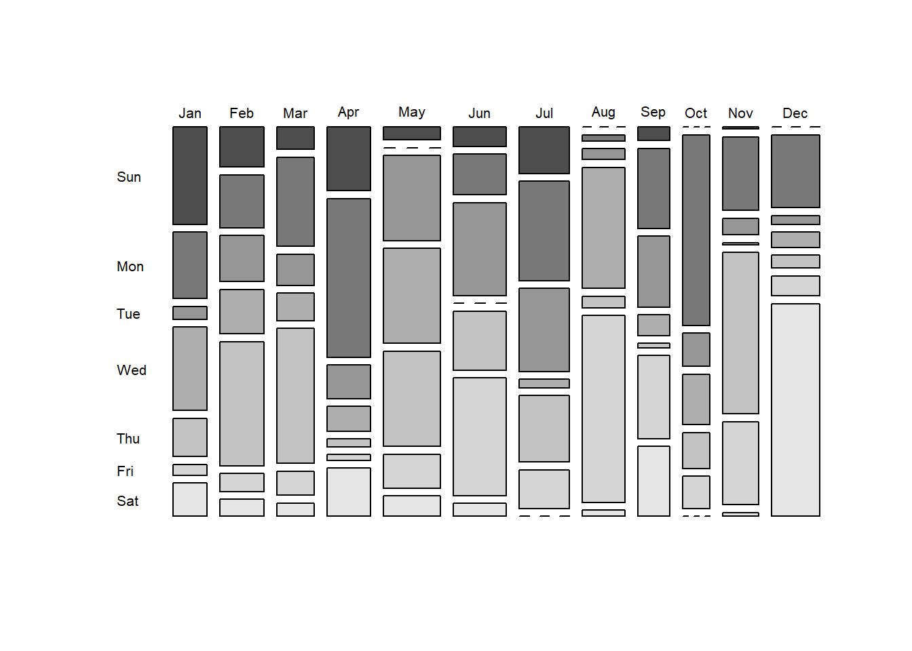
Perform text analysis on the column of memo in terms of PCA and correlation.
summary(nchar(gl_df$memo))> Min. 1st Qu. Median Mean 3rd Qu. Max. NA's
> 3.00 17.00 38.00 37.84 50.00 96.00 1456gl_df %>%
dplyr::filter(!is.na(memo), nchar(memo) > 95) %>%
pull(memo)> [1] "Commission on sales of $79,815.90 (see report) x 5%. January - June 2007. Based on a cash basis."library(tidytext)
library(wordcloud2)
txt <- gl_df %>%
tidytext::unnest_tokens(word, memo) %>%
anti_join(stop_words) %>%
dplyr::filter(!str_detect(word, "[0-9]"))
txt %>%
count(word, sort = TRUE) %>%
wordcloud2::wordcloud2()library(widyr)
txt_pca <- txt %>%
mutate(value = 1) %>%
widyr::widely_svd(word, name, word, nv = 6)
txt_pca %>%
dplyr::filter(dimension == 1) %>%
arrange(desc(value))> # A tibble: 262 x 3
> word dimension value
> <chr> <int> <dbl>
> 1 lanterns 1 0.172
> 2 opal 1 0.169
> 3 glass 1 0.168
> 4 med 1 0.163
> 5 white 1 0.160
> 6 brass 1 0.158
> 7 hpf 1 0.156
> 8 marble 1 0.155
> 9 satin 1 0.151
> 10 pendant 1 0.142
> # ... with 252 more rowstxt_pca %>%
dplyr::filter(dimension == 2) %>%
top_n(10, abs(value)) %>%
mutate(word = fct_reorder(word, value)) %>%
ggplot(aes(value, word)) +
geom_col() 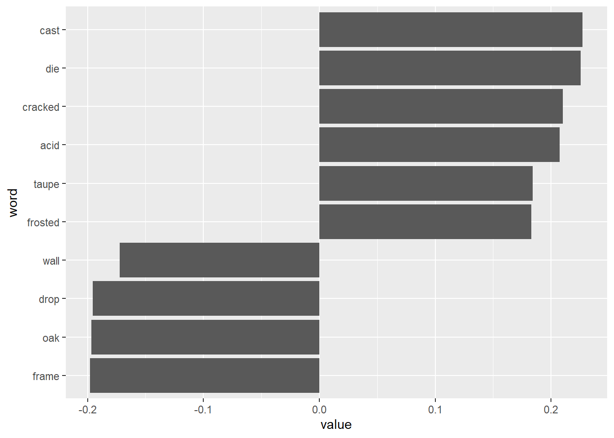
library(igraph)
library(ggraph)
library(tidygraph)
txt_cor <- txt %>%
add_count(word) %>%
dplyr::filter(n >= 50) %>%
select(name, word) %>%
widyr::pairwise_cor(word, name, sort = TRUE) %>%
dplyr::filter(correlation < 1) %>%
head(100)
txt_cor %>%
igraph::graph_from_data_frame() %>%
ggraph::ggraph(layout = 'kk') +
ggraph::geom_edge_link() +
ggraph::geom_node_point() +
ggraph::geom_node_text(aes(label = name), repel = TRUE) +
theme_void() 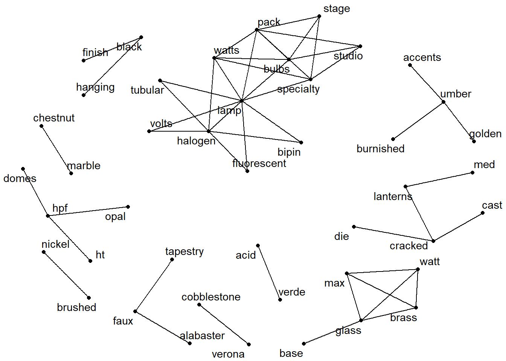
5.3.3 Numberic
revenue <- gl_df[gl_df$subaccount == 'Revenue', ]The column of credit has no debit balance in this case. But, it has 0 credit amount, which could be an error.
sapply(revenue, function(x) length(which(x == 0)))> account subaccount type date num name memo
> 0 0 0 0 0 0 0
> split debit credit balance weekday month quarter
> 0 847 5 0 0 0 0revenue %>% map_df(~sum(.x == 0))> # A tibble: 1 x 14
> account subaccount type date num name memo split debit credit balance
> <int> <int> <int> <int> <int> <int> <int> <int> <int> <int> <int>
> 1 0 0 0 0 0 0 0 0 847 5 0
> # ... with 3 more variables: weekday <int>, month <int>, quarter <int>revenue %>% map_df(~mean(.x == 0))> # A tibble: 1 x 14
> account subaccount type date num name memo split debit credit balance
> <dbl> <dbl> <dbl> <dbl> <dbl> <dbl> <dbl> <dbl> <dbl> <dbl> <dbl>
> 1 0 0 0 0 0 0 0 0 1 0.00590 0
> # ... with 3 more variables: weekday <dbl>, month <dbl>, quarter <dbl>revenue %>%
dplyr::filter(debit == 0, credit == 0)> # A tibble: 5 x 14
> account subaccount type date num name memo split debit credit
> <chr> <chr> <chr> <date> <chr> <chr> <chr> <chr> <dbl> <dbl>
> 1 Revenue Revenue Invoice 2018-11-29 71123 Kern L~ 18x8x1~ Acco~ 0 0
> 2 Revenue Revenue Invoice 2018-11-29 71123 Kern L~ Burnis~ Acco~ 0 0
> 3 Revenue Revenue Invoice 2018-11-29 71123 Kern L~ Tapest~ Acco~ 0 0
> 4 Revenue Revenue Invoice 2018-12-03 71139 Lavery~ Cand. ~ Acco~ 0 0
> 5 Revenue Revenue Invoice 2018-12-15 71140 Thomps~ Fluore~ Acco~ 0 0
> # ... with 4 more variables: balance <dbl>, weekday <ord>, month <ord>,
> # quarter <fct>revenue %>%
dplyr::filter(across(c(debit, credit), ~.x == 0))> # A tibble: 5 x 14
> account subaccount type date num name memo split debit credit
> <chr> <chr> <chr> <date> <chr> <chr> <chr> <chr> <dbl> <dbl>
> 1 Revenue Revenue Invoice 2018-11-29 71123 Kern L~ 18x8x1~ Acco~ 0 0
> 2 Revenue Revenue Invoice 2018-11-29 71123 Kern L~ Burnis~ Acco~ 0 0
> 3 Revenue Revenue Invoice 2018-11-29 71123 Kern L~ Tapest~ Acco~ 0 0
> 4 Revenue Revenue Invoice 2018-12-03 71139 Lavery~ Cand. ~ Acco~ 0 0
> 5 Revenue Revenue Invoice 2018-12-15 71140 Thomps~ Fluore~ Acco~ 0 0
> # ... with 4 more variables: balance <dbl>, weekday <ord>, month <ord>,
> # quarter <fct>Analyze revenue at the level of month based on both frequency and amount.
# by(revenue, revenue$month, summary)
table(revenue$month) %>% prop.table()>
> Jan Feb Mar Apr May Jun Jul
> 0.07438017 0.08736718 0.06611570 0.08264463 0.14285714 0.13341204 0.11924439
> Aug Sep Oct Nov Dec
> 0.08382527 0.04250295 0.02715466 0.06257379 0.07792208ggplot(revenue) +
geom_bar(aes(x = factor(month), y = after_stat(count / sum(count)))) +
scale_y_continuous(labels = scales::percent, name = "Proportion") +
labs(x = "", y = "") +
theme_light() 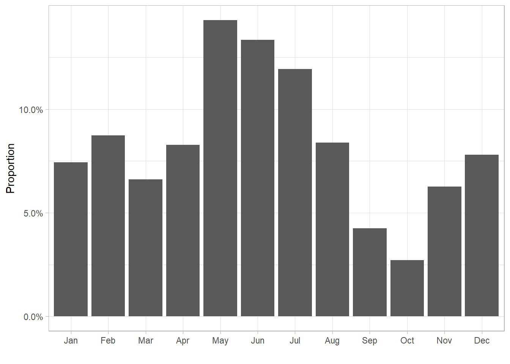
revenue %>%
ggplot(aes(month, credit)) +
geom_bar(stat = 'summary', fun = "median", fill = 'steelblue') +
geom_label(stat = "count", aes(y = ..count.., label = ..count..)) +
scale_y_continuous(breaks = seq(0, 600, by = 100), labels = scales::comma) +
labs(x = "", y = "") +
theme_light()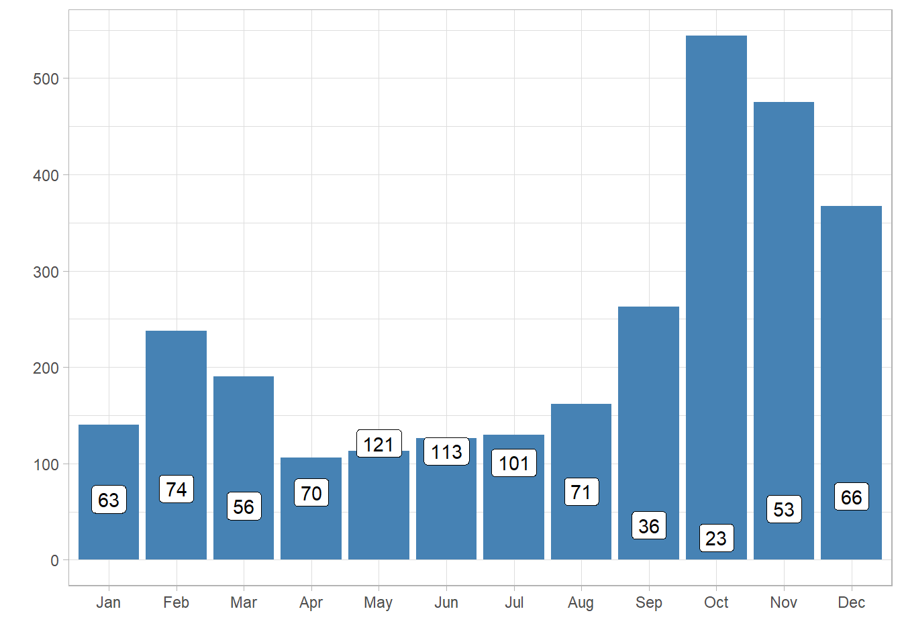
with(revenue, tapply(credit, month, function(x) {c(min(x) , max(x))}))> $Jan
> [1] 4.95 8400.00
>
> $Feb
> [1] 4.95 1980.00
>
> $Mar
> [1] 9.9 5600.0
>
> $Apr
> [1] 4.95 12600.00
>
> $May
> [1] 4.95 6750.00
>
> $Jun
> [1] 4.95 4500.00
>
> $Jul
> [1] 13.5 7875.0
>
> $Aug
> [1] 19.8 5000.0
>
> $Sep
> [1] 35.1 6300.0
>
> $Oct
> [1] 50 6300
>
> $Nov
> [1] 0 4700
>
> $Dec
> [1] 0 8100revenue %>%
group_by(month) %>%
arrange(desc(credit)) %>%
slice(c(1, n())) > # A tibble: 24 x 14
> # Groups: month [12]
> account subaccount type date num name memo split debit credit
> <chr> <chr> <chr> <date> <chr> <chr> <chr> <chr> <dbl> <dbl>
> 1 Revenue Revenue Invoice 2018-01-29 71124 Kern ~ Burnis~ Acco~ 0 8.4 e3
> 2 Revenue Revenue Invoice 2018-01-28 71072 Cole ~ Haloge~ Acco~ 0 4.95e0
> 3 Revenue Revenue Invoice 2018-02-01 71121 Kern ~ 18x8x1~ Acco~ 0 1.98e3
> 4 Revenue Revenue Invoice 2018-02-12 71088 Cole ~ Haloge~ Acco~ 0 4.95e0
> 5 Revenue Revenue Invoice 2018-03-28 71125 Kern ~ Cand. ~ Acco~ 0 5.6 e3
> 6 Revenue Revenue Invoice 2018-03-27 71060 Godwi~ Haloge~ Acco~ 0 9.9 e0
> 7 Revenue Revenue Invoice 2018-04-13 71126 Kern ~ Golden~ Acco~ 0 1.26e4
> 8 Revenue Revenue Invoice 2018-04-16 71087 Cole ~ Haloge~ Acco~ 0 4.95e0
> 9 Revenue Revenue Invoice 2018-05-22 71127 Kern ~ Domes,~ Acco~ 0 6.75e3
> 10 Revenue Revenue Invoice 2018-05-24 71086 Cole ~ Haloge~ Acco~ 0 4.95e0
> # ... with 14 more rows, and 4 more variables: balance <dbl>, weekday <ord>,
> # month <ord>, quarter <fct>revenue %>%
group_by(month) %>%
summarise(monthly_sales = sum(credit), .groups = "drop") %>%
mutate(accumlated_sales = cumsum(monthly_sales))> # A tibble: 12 x 3
> month monthly_sales accumlated_sales
> * <ord> <dbl> <dbl>
> 1 Jan 25507. 25507.
> 2 Feb 25795. 51302.
> 3 Mar 30483. 81786.
> 4 Apr 32325. 114111.
> 5 May 29839. 143950.
> 6 Jun 31883. 175833.
> 7 Jul 39460. 215294.
> 8 Aug 31809. 247103.
> 9 Sep 29191. 276294.
> 10 Oct 28512. 304806.
> 11 Nov 39128 343934.
> 12 Dec 67876. 411810.Analyze revenue at the level of weekday based on both frequency and amount. The result indicates a cutoff problem or possible fraud as most of transactions are posted on weekends. 1. Frequency: Jan (Sun, Sat) 63% and Dec (Sat) 62%. 2. Amount: Jan (Sun, Sat) 51% and Dec (Sat) 46%.
with(revenue, table(month, weekday)) %>% addmargins()> weekday
> month Sun Mon Tue Wed Thu Fri Sat Sum
> Jan 30 1 0 16 6 0 10 63
> Feb 16 17 16 8 6 5 6 74
> Mar 8 23 10 9 6 0 0 56
> Apr 14 17 13 5 0 1 20 70
> May 0 0 3 49 45 14 10 121
> Jun 10 14 46 0 29 14 0 113
> Jul 0 27 28 0 29 17 0 101
> Aug 0 0 3 4 4 60 0 71
> Sep 0 0 16 5 0 15 0 36
> Oct 0 11 5 0 4 3 0 23
> Nov 0 19 5 0 18 11 0 53
> Dec 0 14 0 5 0 6 41 66
> Sum 78 143 145 101 147 146 87 847table(revenue$month, revenue$weekday) %>% prop.table(margin = 1) %>% round(2) %>% addmargins(2)>
> Sun Mon Tue Wed Thu Fri Sat Sum
> Jan 0.48 0.02 0.00 0.25 0.10 0.00 0.16 1.01
> Feb 0.22 0.23 0.22 0.11 0.08 0.07 0.08 1.01
> Mar 0.14 0.41 0.18 0.16 0.11 0.00 0.00 1.00
> Apr 0.20 0.24 0.19 0.07 0.00 0.01 0.29 1.00
> May 0.00 0.00 0.02 0.40 0.37 0.12 0.08 0.99
> Jun 0.09 0.12 0.41 0.00 0.26 0.12 0.00 1.00
> Jul 0.00 0.27 0.28 0.00 0.29 0.17 0.00 1.01
> Aug 0.00 0.00 0.04 0.06 0.06 0.85 0.00 1.01
> Sep 0.00 0.00 0.44 0.14 0.00 0.42 0.00 1.00
> Oct 0.00 0.48 0.22 0.00 0.17 0.13 0.00 1.00
> Nov 0.00 0.36 0.09 0.00 0.34 0.21 0.00 1.00
> Dec 0.00 0.21 0.00 0.08 0.00 0.09 0.62 1.00table(revenue$month, revenue$weekday) %>% margin.table(1)>
> Jan Feb Mar Apr May Jun Jul Aug Sep Oct Nov Dec
> 63 74 56 70 121 113 101 71 36 23 53 66table(revenue$month, revenue$weekday) %>% margin.table(2)>
> Sun Mon Tue Wed Thu Fri Sat
> 78 143 145 101 147 146 87by(revenue$month, revenue$weekday, summary) > revenue$weekday: Sun
> Jan Feb Mar Apr May Jun Jul Aug Sep Oct Nov Dec
> 30 16 8 14 0 10 0 0 0 0 0 0
> ------------------------------------------------------------
> revenue$weekday: Mon
> Jan Feb Mar Apr May Jun Jul Aug Sep Oct Nov Dec
> 1 17 23 17 0 14 27 0 0 11 19 14
> ------------------------------------------------------------
> revenue$weekday: Tue
> Jan Feb Mar Apr May Jun Jul Aug Sep Oct Nov Dec
> 0 16 10 13 3 46 28 3 16 5 5 0
> ------------------------------------------------------------
> revenue$weekday: Wed
> Jan Feb Mar Apr May Jun Jul Aug Sep Oct Nov Dec
> 16 8 9 5 49 0 0 4 5 0 0 5
> ------------------------------------------------------------
> revenue$weekday: Thu
> Jan Feb Mar Apr May Jun Jul Aug Sep Oct Nov Dec
> 6 6 6 0 45 29 29 4 0 4 18 0
> ------------------------------------------------------------
> revenue$weekday: Fri
> Jan Feb Mar Apr May Jun Jul Aug Sep Oct Nov Dec
> 0 5 0 1 14 14 17 60 15 3 11 6
> ------------------------------------------------------------
> revenue$weekday: Sat
> Jan Feb Mar Apr May Jun Jul Aug Sep Oct Nov Dec
> 10 6 0 20 10 0 0 0 0 0 0 41revenue %>%
janitor::tabyl(month, weekday) %>%
janitor::adorn_totals() %>%
janitor::adorn_percentages("row") %>%
janitor::adorn_pct_formatting() %>%
janitor::adorn_ns("front") %>%
janitor::adorn_title("combined") %>%
janitor::adorn_rounding(digits = 0)> month/weekday Sun Mon Tue Wed Thu
> Jan 30 (47.6%) 1 (1.6%) 0 (0.0%) 16 (25.4%) 6 (9.5%)
> Feb 16 (21.6%) 17 (23.0%) 16 (21.6%) 8 (10.8%) 6 (8.1%)
> Mar 8 (14.3%) 23 (41.1%) 10 (17.9%) 9 (16.1%) 6 (10.7%)
> Apr 14 (20.0%) 17 (24.3%) 13 (18.6%) 5 (7.1%) 0 (0.0%)
> May 0 (0.0%) 0 (0.0%) 3 (2.5%) 49 (40.5%) 45 (37.2%)
> Jun 10 (8.8%) 14 (12.4%) 46 (40.7%) 0 (0.0%) 29 (25.7%)
> Jul 0 (0.0%) 27 (26.7%) 28 (27.7%) 0 (0.0%) 29 (28.7%)
> Aug 0 (0.0%) 0 (0.0%) 3 (4.2%) 4 (5.6%) 4 (5.6%)
> Sep 0 (0.0%) 0 (0.0%) 16 (44.4%) 5 (13.9%) 0 (0.0%)
> Oct 0 (0.0%) 11 (47.8%) 5 (21.7%) 0 (0.0%) 4 (17.4%)
> Nov 0 (0.0%) 19 (35.8%) 5 (9.4%) 0 (0.0%) 18 (34.0%)
> Dec 0 (0.0%) 14 (21.2%) 0 (0.0%) 5 (7.6%) 0 (0.0%)
> Total 78 (9.2%) 143 (16.9%) 145 (17.1%) 101 (11.9%) 147 (17.4%)
> Fri Sat
> 0 (0.0%) 10 (15.9%)
> 5 (6.8%) 6 (8.1%)
> 0 (0.0%) 0 (0.0%)
> 1 (1.4%) 20 (28.6%)
> 14 (11.6%) 10 (8.3%)
> 14 (12.4%) 0 (0.0%)
> 17 (16.8%) 0 (0.0%)
> 60 (84.5%) 0 (0.0%)
> 15 (41.7%) 0 (0.0%)
> 3 (13.0%) 0 (0.0%)
> 11 (20.8%) 0 (0.0%)
> 6 (9.1%) 41 (62.1%)
> 146 (17.2%) 87 (10.3%)by(revenue$credit, revenue$weekday, summary) > revenue$weekday: Sun
> Min. 1st Qu. Median Mean 3rd Qu. Max.
> 4.95 75.60 224.00 433.91 468.75 4500.00
> ------------------------------------------------------------
> revenue$weekday: Mon
> Min. 1st Qu. Median Mean 3rd Qu. Max.
> 0.0 75.6 135.0 353.7 341.0 8400.0
> ------------------------------------------------------------
> revenue$weekday: Tue
> Min. 1st Qu. Median Mean 3rd Qu. Max.
> 9.0 84.0 180.0 511.8 405.0 7875.0
> ------------------------------------------------------------
> revenue$weekday: Wed
> Min. 1st Qu. Median Mean 3rd Qu. Max.
> 9.9 90.0 285.0 755.5 600.0 8100.0
> ------------------------------------------------------------
> revenue$weekday: Thu
> Min. 1st Qu. Median Mean 3rd Qu. Max.
> 0.0 75.6 129.6 362.0 300.0 4700.0
> ------------------------------------------------------------
> revenue$weekday: Fri
> Min. 1st Qu. Median Mean 3rd Qu. Max.
> 13.5 63.0 135.0 501.9 270.0 12600.0
> ------------------------------------------------------------
> revenue$weekday: Sat
> Min. 1st Qu. Median Mean 3rd Qu. Max.
> 0.0 94.5 300.0 579.1 577.5 7000.0psych::describeBy(revenue$credit, revenue$weekday, mat = TRUE) > item group1 vars n mean sd median trimmed mad min
> X11 1 Sun 1 78 433.9077 684.9086 224.0 284.1289 255.7114 4.95
> X12 2 Mon 1 143 353.6741 807.0311 135.0 207.3822 167.5338 0.00
> X13 3 Tue 1 145 511.8241 1167.9991 180.0 247.6325 178.8016 9.00
> X14 4 Wed 1 101 755.5332 1436.2487 285.0 365.9401 311.3460 9.90
> X15 5 Thu 1 147 361.9544 686.0834 129.6 201.3807 158.7865 0.00
> X16 6 Fri 1 146 501.9095 1359.8335 135.0 197.0905 133.4340 13.50
> X17 7 Sat 1 87 579.0793 961.5876 300.0 378.8092 324.6894 0.00
> max range skew kurtosis se
> X11 4500 4495.05 3.457969 15.017371 77.55063
> X12 8400 8400.00 7.451695 67.636480 67.48733
> X13 7875 7866.00 4.489303 21.141764 96.99705
> X14 8100 8090.10 3.048351 9.366994 142.91209
> X15 4700 4700.00 3.970806 17.436018 56.58721
> X16 12600 12586.50 6.006404 44.221777 112.54062
> X17 7000 7000.00 3.968410 21.091200 103.09301xtabs(credit ~ month + weekday, revenue) %>% ftable() > weekday Sun Mon Tue Wed Thu Fri Sat
> month
> Jan 10827.85 8400.00 0.00 2771.95 1126.00 0.00 2381.00
> Feb 4391.00 2187.45 3185.00 2991.00 6745.00 1932.00 4364.00
> Mar 1872.00 7273.45 1687.95 17429.00 2221.00 0.00 0.00
> Apr 2578.95 2187.45 2926.95 1563.00 0.00 12600.00 10468.95
> May 0.00 0.00 8756.00 11354.90 6403.50 1637.10 1687.95
> Jun 14175.00 2578.95 8279.35 0.00 5212.45 1637.10 0.00
> Jul 0.00 5163.40 22491.25 0.00 3646.35 8159.25 0.00
> Aug 0.00 0.00 2085.00 13300.00 8000.00 8424.45 0.00
> Sep 0.00 0.00 21484.00 5569.00 0.00 2138.40 0.00
> Oct 0.00 10723.60 1719.00 0.00 1714.00 14355.00 0.00
> Nov 0.00 7674.00 1600.00 0.00 18139.00 11715.00 0.00
> Dec 0.00 4387.10 0.00 21330.00 0.00 10680.48 31478.00xtabs(credit ~ month + weekday, revenue) %>% ftable() %>% prop.table(margin = 1) %>% round(2)> weekday Sun Mon Tue Wed Thu Fri Sat
> month
> Jan 0.42 0.33 0.00 0.11 0.04 0.00 0.09
> Feb 0.17 0.08 0.12 0.12 0.26 0.07 0.17
> Mar 0.06 0.24 0.06 0.57 0.07 0.00 0.00
> Apr 0.08 0.07 0.09 0.05 0.00 0.39 0.32
> May 0.00 0.00 0.29 0.38 0.21 0.05 0.06
> Jun 0.44 0.08 0.26 0.00 0.16 0.05 0.00
> Jul 0.00 0.13 0.57 0.00 0.09 0.21 0.00
> Aug 0.00 0.00 0.07 0.42 0.25 0.26 0.00
> Sep 0.00 0.00 0.74 0.19 0.00 0.07 0.00
> Oct 0.00 0.38 0.06 0.00 0.06 0.50 0.00
> Nov 0.00 0.20 0.04 0.00 0.46 0.30 0.00
> Dec 0.00 0.06 0.00 0.31 0.00 0.16 0.46xtabs(credit ~ month + weekday, revenue) %>% ftable() %>% summary() > V1 V2 V3 V4
> Min. : 0 Min. : 0 Min. : 0 Min. : 0
> 1st Qu.: 0 1st Qu.: 1641 1st Qu.: 1666 1st Qu.: 0
> Median : 0 Median : 3483 Median : 2506 Median : 2881
> Mean : 2820 Mean : 4215 Mean : 6185 Mean : 6359
> 3rd Qu.: 3032 3rd Qu.: 7374 3rd Qu.: 8399 3rd Qu.:11841
> Max. :14175 Max. :10724 Max. :22491 Max. :21330
> V5 V6 V7
> Min. : 0.0 Min. : 0 Min. : 0
> 1st Qu.: 844.5 1st Qu.: 1637 1st Qu.: 0
> Median : 2933.7 Median : 5149 Median : 0
> Mean : 4433.9 Mean : 6107 Mean : 4198
> 3rd Qu.: 6488.9 3rd Qu.:10939 3rd Qu.: 2877
> Max. :18139.0 Max. :14355 Max. :31478table1::table1(~credit + weekday | quarter, data = revenue)| 1 (N=193) |
2 (N=304) |
3 (N=208) |
4 (N=142) |
Overall (N=847) |
|
|---|---|---|---|---|---|
| credit | |||||
| Mean (SD) | 424 (871) | 309 (907) | 483 (1080) | 954 (1420) | 486 (1070) |
| Median [Min, Max] | 210 [4.95, 8400] | 119 [4.95, 12600] | 162 [13.5, 7880] | 420 [0, 8100] | 171 [0, 12600] |
| weekday | |||||
| Sun | 54 (28.0%) | 24 (7.9%) | 0 (0%) | 0 (0%) | 78 (9.2%) |
| Mon | 41 (21.2%) | 31 (10.2%) | 27 (13.0%) | 44 (31.0%) | 143 (16.9%) |
| Tue | 26 (13.5%) | 62 (20.4%) | 47 (22.6%) | 10 (7.0%) | 145 (17.1%) |
| Wed | 33 (17.1%) | 54 (17.8%) | 9 (4.3%) | 5 (3.5%) | 101 (11.9%) |
| Thu | 18 (9.3%) | 74 (24.3%) | 33 (15.9%) | 22 (15.5%) | 147 (17.4%) |
| Fri | 5 (2.6%) | 29 (9.5%) | 92 (44.2%) | 20 (14.1%) | 146 (17.2%) |
| Sat | 16 (8.3%) | 30 (9.9%) | 0 (0%) | 41 (28.9%) | 87 (10.3%) |
vcd::assocstats(table(revenue$month, revenue$weekday))> X^2 df P(> X^2)
> Likelihood Ratio 1024.7 66 0
> Pearson 1085.6 66 0
>
> Phi-Coefficient : NA
> Contingency Coeff.: 0.749
> Cramer's V : 0.462kappa(table(revenue$month, revenue$weekday))> [1] 8.449534library(patchwork)
p1 <- revenue %>%
mutate(weekday = fct_relevel(weekday, c("Mon", "Tue", "Wed", "Thu", "Fri", "Sat", "Sun"))) %>%
group_by(month, weekday) %>%
count() %>%
ggplot(aes(month, weekday, fill = n)) +
geom_tile(color = "#1D2024", size = 0.5, stat = "identity") +
scale_fill_viridis_c(option = "B") +
coord_equal() +
labs(x = "", y = "")
p2 <- revenue %>%
mutate(weekday = fct_relevel(weekday, c("Mon", "Tue", "Wed", "Thu", "Fri", "Sat", "Sun"))) %>%
group_by(month, weekday) %>%
summarise(amt = sum(credit), .groups = "drop") %>%
ggplot(aes(month, weekday, fill = amt)) +
geom_tile(color = "#1D2024", size = 0.5, stat = "identity") +
scale_fill_viridis_c(option = "B",
breaks = seq(10000, 30000, 10000),
labels = c("10K", "20K", "30K")) +
coord_equal() +
labs(x = "", y = "")
(p1/p2) +
plot_layout(guide = 'collect') +
plot_annotation(title = "The number of Journal voucher posted on weekends",
caption = "RAudit Solution LLP\nhttps://stewartli.github.io/tailwindcss/") &
theme(plot.background = element_rect(fill = "#1D2024", color = "#1D2024"),
panel.background = element_rect(fill = "#1D2024", color = "#1D2024"),
legend.background = element_rect(fill = "#1D2024", color = "#1D2024"),
text = element_text(color = "#FAFAFA"),
axis.text = element_text(color = "#FAFAFA"),
axis.text.x = element_text(vjust = 1),
plot.title.position = "plot",
title = element_text(face = "bold"),
panel.grid = element_blank(),
axis.line = element_blank(),
axis.ticks = element_blank(),
legend.position = "right",
legend.title = element_blank())knitr::include_graphics("img/calender.png")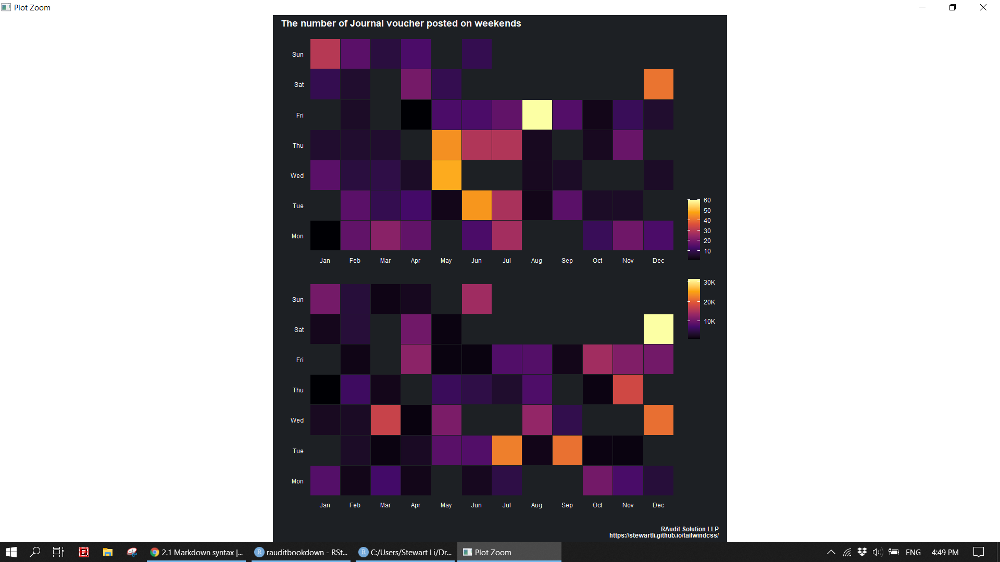
Calculate statistical descriptive summary of the column of credit. Its log10 transformation is normal distribution.
psych::describe(revenue$credit)> vars n mean sd median trimmed mad min max range skew kurtosis
> X1 1 847 486.2 1065.75 171 244.28 180.14 0 12600 12600 5.31 36.81
> se
> X1 36.62var(revenue$credit)> [1] 1135823quantile(revenue$credit, probs = seq(from = 0, to = 1, by = .1), na.rm = TRUE)> 0% 10% 20% 30% 40% 50% 60% 70%
> 0.00 29.25 56.00 88.00 118.80 171.00 270.00 324.00
> 80% 90% 100%
> 534.40 981.00 12600.00IQR(revenue$credit)> [1] 291.6summary(revenue$credit)> Min. 1st Qu. Median Mean 3rd Qu. Max.
> 0.0 75.6 171.0 486.2 367.2 12600.0fivenum(revenue$credit) > [1] 0.0 75.6 171.0 367.2 12600.0revenue %>%
dplyr::filter(ntile(credit, 50) == 1)> # A tibble: 17 x 14
> account subaccount type date num name memo split debit credit
> <chr> <chr> <chr> <date> <chr> <chr> <chr> <chr> <dbl> <dbl>
> 1 Revenue Revenue Invoice 2018-01-28 71072 Cole ~ Haloge~ Acco~ 0 4.95
> 2 Revenue Revenue Invoice 2018-01-31 71059 Godwi~ Haloge~ Acco~ 0 9.9
> 3 Revenue Revenue Invoice 2018-02-12 71088 Cole ~ Haloge~ Acco~ 0 4.95
> 4 Revenue Revenue Invoice 2018-02-27 71052 Baker~ Fluore~ Acco~ 0 9
> 5 Revenue Revenue Invoice 2018-03-27 71060 Godwi~ Haloge~ Acco~ 0 9.9
> 6 Revenue Revenue Invoice 2018-04-16 71087 Cole ~ Haloge~ Acco~ 0 4.95
> 7 Revenue Revenue Invoice 2018-04-17 71061 Godwi~ Haloge~ Acco~ 0 9.9
> 8 Revenue Revenue Invoice 2018-05-02 71062 Godwi~ Haloge~ Acco~ 0 9.9
> 9 Revenue Revenue Invoice 2018-05-19 71063 Godwi~ Haloge~ Acco~ 0 9.9
> 10 Revenue Revenue Invoice 2018-05-24 71086 Cole ~ Haloge~ Acco~ 0 4.95
> 11 Revenue Revenue Invoice 2018-06-07 71085 Cole ~ Haloge~ Acco~ 0 4.95
> 12 Revenue Revenue Invoice 2018-11-29 71123 Kern ~ 18x8x1~ Acco~ 0 0
> 13 Revenue Revenue Invoice 2018-11-29 71123 Kern ~ Burnis~ Acco~ 0 0
> 14 Revenue Revenue Invoice 2018-11-29 71123 Kern ~ Tapest~ Acco~ 0 0
> 15 Revenue Revenue Invoice 2018-12-03 71139 Laver~ Haloge~ Acco~ 0 9.35
> 16 Revenue Revenue Invoice 2018-12-03 71139 Laver~ Cand. ~ Acco~ 0 0
> 17 Revenue Revenue Invoice 2018-12-15 71140 Thomp~ Fluore~ Acco~ 0 0
> # ... with 4 more variables: balance <dbl>, weekday <ord>, month <ord>,
> # quarter <fct>revenue %>%
dplyr::filter(between(credit, 5000, 10000))> # A tibble: 12 x 14
> account subaccount type date num name memo split debit credit
> <chr> <chr> <chr> <date> <chr> <chr> <chr> <chr> <dbl> <dbl>
> 1 Revenue Revenue Invoice 2018-01-29 71124 Kern ~ Burnis~ Acco~ 0 8400
> 2 Revenue Revenue Invoice 2018-03-28 71125 Kern ~ Cand. ~ Acco~ 0 5600
> 3 Revenue Revenue Invoice 2018-05-22 71127 Kern ~ Domes,~ Acco~ 0 6750
> 4 Revenue Revenue Invoice 2018-07-17 71129 Kern ~ Golden~ Acco~ 0 7875
> 5 Revenue Revenue Invoice 2018-08-22 71109 Dan A~ Vianne~ Acco~ 0 5000
> 6 Revenue Revenue Invoice 2018-09-25 71107 Stern~ White,~ Acco~ 0 5760
> 7 Revenue Revenue Invoice 2018-09-25 71107 Stern~ Sunset~ Acco~ 0 6300
> 8 Revenue Revenue Invoice 2018-10-26 71108 Stern~ Sunset~ Acco~ 0 6300
> 9 Revenue Revenue Invoice 2018-10-26 71108 Stern~ White,~ Acco~ 0 5760
> 10 Revenue Revenue Invoice 2018-12-12 71106 Stern~ Sunset~ Acco~ 0 6300
> 11 Revenue Revenue Invoice 2018-12-12 71106 Stern~ Domes,~ Acco~ 0 8100
> 12 Revenue Revenue Invoice 2018-12-15 71137 Dan A~ Custom~ Acco~ 0 7000
> # ... with 4 more variables: balance <dbl>, weekday <ord>, month <ord>,
> # quarter <fct>set.seed(2021)
revenue %>%
slice_sample(prop = .9) %>%
summarise(sum(credit)) > # A tibble: 1 x 1
> `sum(credit)`
> <dbl>
> 1 379895.revenue %>%
ggplot(aes(sample = log10(credit))) +
geom_qq() +
theme_light() 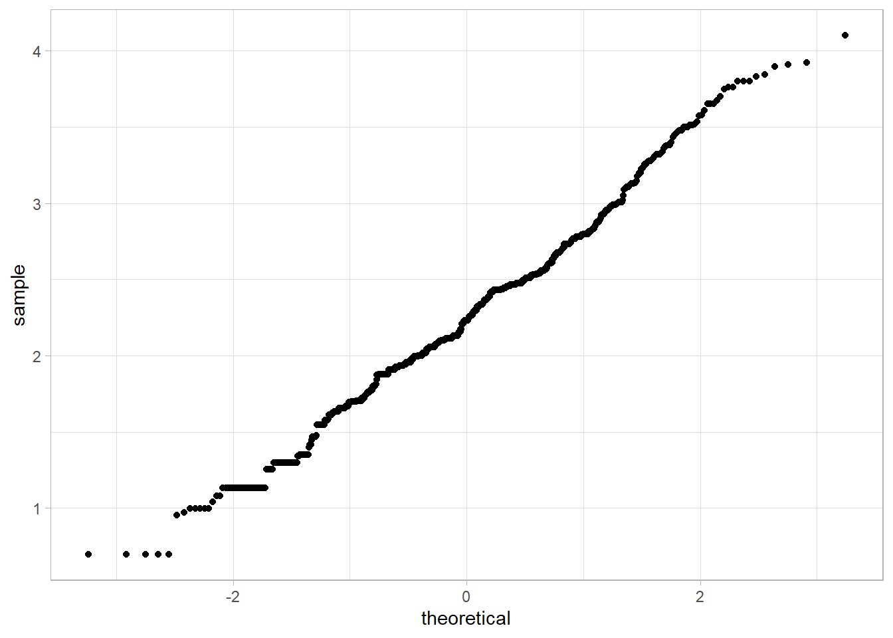
getPalette <- colorRampPalette(RColorBrewer::brewer.pal(8, "Set2"))(12)
lb <- function(x) mean(x) - sd(x)
ub <- function(x) mean(x) + sd(x)
df_sum <- revenue %>%
group_by(quarter) %>%
summarise(across(credit, list(ymin = lb, ymax = ub, mean = mean)))
revenue %>%
ggplot(aes(factor(quarter), credit, fill = factor(quarter))) +
geom_violin(position = position_nudge(x = .2, y = 0), trim = TRUE, alpha = .8, scale = "width") +
geom_point(aes(y = credit, color = factor(quarter)),
position = position_jitter(width = .15), size = .5, alpha = 0.8) +
geom_boxplot(width = .1, outlier.shape = NA, alpha = 0.5) +
geom_point(data = df_sum, aes(x = quarter, y = credit_mean),
position = position_nudge(x = 0.3), size = 2.5) +
geom_errorbar(data = df_sum, aes(ymin = credit_ymin, ymax = credit_ymax, y = credit_mean),
position = position_nudge(x = 0.3), width = 0) +
expand_limits(x = 5.25) +
scale_y_continuous(labels = scales::comma) +
scale_color_manual(values = getPalette) +
scale_fill_manual(values = getPalette) +
theme_light() +
theme(legend.position = "none") +
labs(x = "", y = "")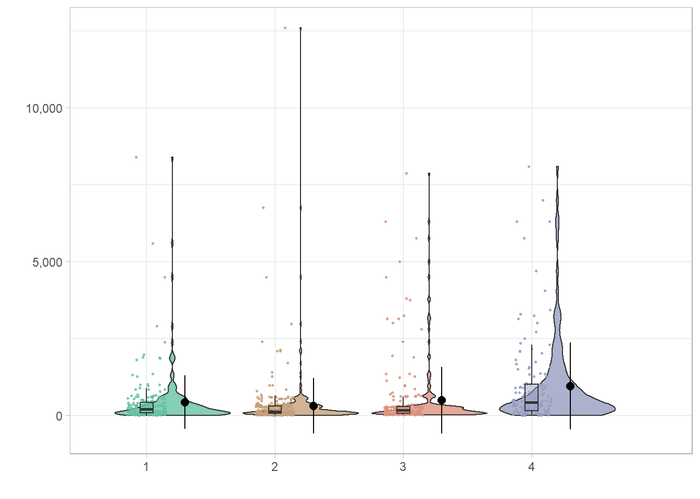
revenue %>%
ggplot(aes(credit, fill = factor(month))) +
geom_histogram(bins = 50, alpha = .5) +
geom_rug() +
geom_vline(xintercept = 200,
linetype = "dashed", size = 1, color = "red",
show.legend = FALSE) +
scale_x_log10(labels = scales::comma) +
scale_fill_discrete(name = "", guide = "none") +
annotate("text",
x = mean(revenue$credit) * 3.6, y = 65,
label = paste0("Mean: $", round(mean(revenue$credit), 2))) +
labs(x = "", y ="") +
theme_light()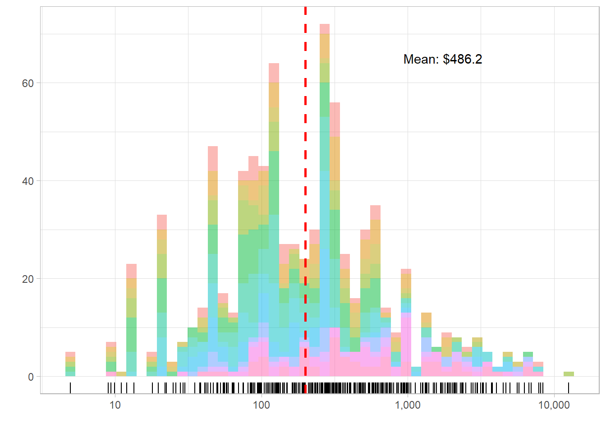
revenue %>%
mutate(weekday = fct_relevel(weekday, rev(c("Mon", "Tue", "Wed", "Thu", "Fri", "Sat", "Sun")))) %>%
ggplot(aes(credit, weekday)) +
geom_boxplot(outlier.color = NA) +
geom_jitter(shape = 16, position = position_jitter(0.4), alpha = .3) +
stat_summary(fun = mean, geom = "point", shape = 13, size = 4, color = "firebrick") +
scale_x_continuous(labels = scales::dollar) +
theme_light() +
labs(x = "", y = "")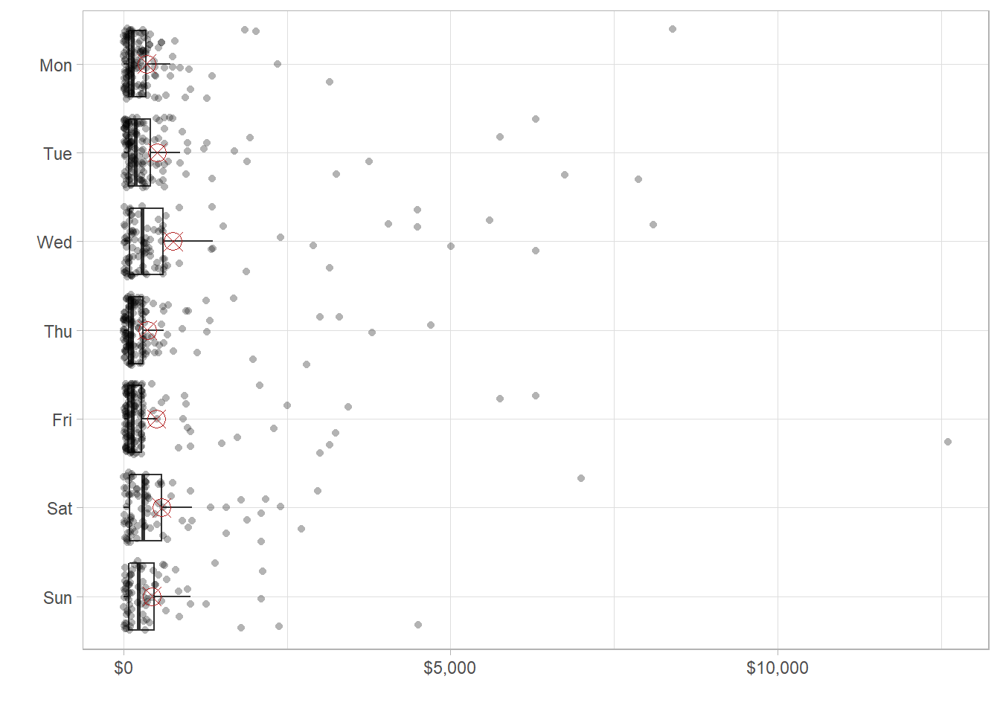
ml_mth <- revenue %>%
mutate(weekday = fct_relevel(weekday, rev(c("Mon", "Tue", "Wed", "Thu", "Fri", "Sat", "Sun")))) %>%
group_by(month, weekday) %>%
summarise(freq = n(),
amt = sum(credit)) %>%
mutate(cum_freq = cumsum(freq),
cum_amt = cumsum(amt))
ml_mth %>%
ggplot(aes(amt, freq, color = amt > 10000)) +
geom_point() +
geom_vline(xintercept = 10000, lty = 2) +
ggforce::geom_mark_ellipse(data = dplyr::filter(ml_mth, freq <=10, amt >= 5000, amt <= 10000),
aes(description = "Watch closely"),
label.fontsize = 6,
label.buffer = unit(4, 'mm'),
label.fill = "transparent",
show.legend = FALSE) +
scale_x_continuous(label = scales::comma) +
scale_y_continuous(breaks = seq(0, 60, 10)) +
scale_color_discrete(name = "Exceed", labels = c("Yes", "No"), guide = FALSE) +
labs(x = "Total revenue", y = "Number of transactions") +
theme_light()
5.4 Audit planning
5.4.1 Test of controls
There is no gap on journal entries (JE) numbers.
revenue %>%
distinct(num, .keep_all = TRUE) %>%
arrange(num) %>%
mutate(gap = as.numeric(num) - dplyr::lag(as.numeric(num))) %>%
dplyr::filter(!is.na(gap), gap > 1)> # A tibble: 0 x 15
> # ... with 15 variables: account <chr>, subaccount <chr>, type <chr>,
> # date <date>, num <chr>, name <chr>, memo <chr>, split <chr>, debit <dbl>,
> # credit <dbl>, balance <dbl>, weekday <ord>, month <ord>, quarter <fct>,
> # gap <dbl>filter out duplicated JE numbers.
revenue %>%
count(num, sort = TRUE) %>%
add_count(n) > # A tibble: 94 x 3
> num n nn
> <chr> <int> <int>
> 1 71072 17 5
> 2 71085 17 5
> 3 71086 17 5
> 4 71087 17 5
> 5 71088 17 5
> 6 71073 15 11
> 7 71074 15 11
> 8 71075 15 11
> 9 71076 15 11
> 10 71077 15 11
> # ... with 84 more rowsrevenue %>%
group_by(num) %>%
dplyr::filter(n() == 17) > # A tibble: 85 x 14
> # Groups: num [5]
> account subaccount type date num name memo split debit credit
> <chr> <chr> <chr> <date> <chr> <chr> <chr> <chr> <dbl> <dbl>
> 1 Revenue Revenue Invoice 2018-01-28 71072 Cole ~ Die Ca~ Acco~ 0 367.
> 2 Revenue Revenue Invoice 2018-01-28 71072 Cole ~ Tapest~ Acco~ 0 243
> 3 Revenue Revenue Invoice 2018-01-28 71072 Cole ~ Pearl ~ Acco~ 0 342
> 4 Revenue Revenue Invoice 2018-01-28 71072 Cole ~ Sunset~ Acco~ 0 126
> 5 Revenue Revenue Invoice 2018-01-28 71072 Cole ~ Black ~ Acco~ 0 113.
> 6 Revenue Revenue Invoice 2018-01-28 71072 Cole ~ Burnis~ Acco~ 0 270
> 7 Revenue Revenue Invoice 2018-01-28 71072 Cole ~ Chestn~ Acco~ 0 292.
> 8 Revenue Revenue Invoice 2018-01-28 71072 Cole ~ Pendan~ Acco~ 0 22.5
> 9 Revenue Revenue Invoice 2018-01-28 71072 Cole ~ Athena~ Acco~ 0 81
> 10 Revenue Revenue Invoice 2018-01-28 71072 Cole ~ Cand. ~ Acco~ 0 50.4
> # ... with 75 more rows, and 4 more variables: balance <dbl>, weekday <ord>,
> # month <ord>, quarter <fct>revenue$num[duplicated(revenue$num)] %>% head()> [1] "71047" "71047" "71047" "71047" "71047" "71047"filter JE numbers based on columns of date, name, and credit to perform Same same same/different (SSS/SSD) tests.
revenue %>%
group_by(num, date, name, credit) %>%
summarise(freq = n()) %>%
arrange(desc(freq))> # A tibble: 817 x 5
> # Groups: num, date, name [94]
> num date name credit freq
> <chr> <date> <chr> <dbl> <int>
> 1 71123 2018-11-29 Kern Lighting Warehouse:Store #13 0 3
> 2 71052 2018-02-27 Baker's Professional Lighting:Store #15 210 2
> 3 71064 2018-04-22 Godwin Lighting Depot:Store #404 75.6 2
> 4 71065 2018-03-26 Godwin Lighting Depot:Store #303 75.6 2
> 5 71066 2018-04-28 Godwin Lighting Depot:Store #909 75.6 2
> 6 71068 2018-05-10 Godwin Lighting Depot:Store #909 75.6 2
> 7 71069 2018-05-30 Godwin Lighting Depot:Store #1020 75.6 2
> 8 71070 2018-06-11 Godwin Lighting Depot:Store #303 75.6 2
> 9 71073 2018-08-31 Cole Home Builders:Phase 1 - Lot 5 270 2
> 10 71074 2018-08-24 Cole Home Builders:Phase 1 - Lot 5 270 2
> # ... with 807 more rowsrevenue %>%
dplyr::filter(num == "71052", credit == 210) > # A tibble: 2 x 14
> account subaccount type date num name memo split debit credit
> <chr> <chr> <chr> <date> <chr> <chr> <chr> <chr> <dbl> <dbl>
> 1 Revenue Revenue Invoice 2018-02-27 71052 Baker'~ Polish~ Acco~ 0 210
> 2 Revenue Revenue Invoice 2018-02-27 71052 Baker'~ 2032 S~ Acco~ 0 210
> # ... with 4 more variables: balance <dbl>, weekday <ord>, month <ord>,
> # quarter <fct>Assume the authority limit is 5000 and filter out those transactions with credit more than the limit.
revenue %>%
dplyr::filter(credit > 5000)> # A tibble: 12 x 14
> account subaccount type date num name memo split debit credit
> <chr> <chr> <chr> <date> <chr> <chr> <chr> <chr> <dbl> <dbl>
> 1 Revenue Revenue Invoice 2018-01-29 71124 Kern L~ Burni~ Acco~ 0 8400
> 2 Revenue Revenue Invoice 2018-03-28 71125 Kern L~ Cand.~ Acco~ 0 5600
> 3 Revenue Revenue Invoice 2018-04-13 71126 Kern L~ Golde~ Acco~ 0 12600
> 4 Revenue Revenue Invoice 2018-05-22 71127 Kern L~ Domes~ Acco~ 0 6750
> 5 Revenue Revenue Invoice 2018-07-17 71129 Kern L~ Golde~ Acco~ 0 7875
> 6 Revenue Revenue Invoice 2018-09-25 71107 Stern ~ White~ Acco~ 0 5760
> 7 Revenue Revenue Invoice 2018-09-25 71107 Stern ~ Sunse~ Acco~ 0 6300
> 8 Revenue Revenue Invoice 2018-10-26 71108 Stern ~ Sunse~ Acco~ 0 6300
> 9 Revenue Revenue Invoice 2018-10-26 71108 Stern ~ White~ Acco~ 0 5760
> 10 Revenue Revenue Invoice 2018-12-12 71106 Stern ~ Sunse~ Acco~ 0 6300
> 11 Revenue Revenue Invoice 2018-12-12 71106 Stern ~ Domes~ Acco~ 0 8100
> 12 Revenue Revenue Invoice 2018-12-15 71137 Dan A.~ Custo~ Acco~ 0 7000
> # ... with 4 more variables: balance <dbl>, weekday <ord>, month <ord>,
> # quarter <fct>5.4.2 Digits tests
filter out transaction amount ending with 0.9 or divided by 1000.
revenue %>%
dplyr::filter(near(credit - floor(credit), 0.9)) > # A tibble: 10 x 14
> account subaccount type date num name memo split debit credit
> <chr> <chr> <chr> <date> <chr> <chr> <chr> <chr> <dbl> <dbl>
> 1 Revenue Revenue Invoice 2018-01-31 71059 Godwi~ Broadw~ Acco~ 0 127.
> 2 Revenue Revenue Invoice 2018-01-31 71059 Godwi~ Haloge~ Acco~ 0 9.9
> 3 Revenue Revenue Invoice 2018-03-27 71060 Godwi~ Broadw~ Acco~ 0 127.
> 4 Revenue Revenue Invoice 2018-03-27 71060 Godwi~ Haloge~ Acco~ 0 9.9
> 5 Revenue Revenue Invoice 2018-04-17 71061 Godwi~ Broadw~ Acco~ 0 127.
> 6 Revenue Revenue Invoice 2018-04-17 71061 Godwi~ Haloge~ Acco~ 0 9.9
> 7 Revenue Revenue Invoice 2018-05-02 71062 Godwi~ Broadw~ Acco~ 0 127.
> 8 Revenue Revenue Invoice 2018-05-02 71062 Godwi~ Haloge~ Acco~ 0 9.9
> 9 Revenue Revenue Invoice 2018-05-19 71063 Godwi~ Broadw~ Acco~ 0 127.
> 10 Revenue Revenue Invoice 2018-05-19 71063 Godwi~ Haloge~ Acco~ 0 9.9
> # ... with 4 more variables: balance <dbl>, weekday <ord>, month <ord>,
> # quarter <fct>revenue %>%
dplyr::filter(credit %% 1000 == 0) > # A tibble: 10 x 14
> account subaccount type date num name memo split debit credit
> <chr> <chr> <chr> <date> <chr> <chr> <chr> <chr> <dbl> <dbl>
> 1 Revenue Revenue Invoice 2018-03-12 71049 Laver~ Vianne~ Acco~ 0 1000
> 2 Revenue Revenue Invoice 2018-07-13 71119 Kern ~ Burnis~ Acco~ 0 3000
> 3 Revenue Revenue Invoice 2018-08-22 71109 Dan A~ Vianne~ Acco~ 0 5000
> 4 Revenue Revenue Invoice 2018-11-01 71120 Kern ~ Burnis~ Acco~ 0 3000
> 5 Revenue Revenue Invoice 2018-11-29 71123 Kern ~ 18x8x1~ Acco~ 0 0
> 6 Revenue Revenue Invoice 2018-11-29 71123 Kern ~ Burnis~ Acco~ 0 0
> 7 Revenue Revenue Invoice 2018-11-29 71123 Kern ~ Tapest~ Acco~ 0 0
> 8 Revenue Revenue Invoice 2018-12-03 71139 Laver~ Cand. ~ Acco~ 0 0
> 9 Revenue Revenue Invoice 2018-12-15 71137 Dan A~ Custom~ Acco~ 0 7000
> 10 Revenue Revenue Invoice 2018-12-15 71140 Thomp~ Fluore~ Acco~ 0 0
> # ... with 4 more variables: balance <dbl>, weekday <ord>, month <ord>,
> # quarter <fct>filter out same amount that appears more than 20 times.
revenue %>%
group_by(credit) %>%
dplyr::filter(n() > 20) > # A tibble: 64 x 14
> # Groups: credit [3]
> account subaccount type date num name memo split debit credit
> <chr> <chr> <chr> <date> <chr> <chr> <chr> <chr> <dbl> <dbl>
> 1 Revenue Revenue Invoice 2018-01-28 71072 Cole ~ Fluore~ Acco~ 0 13.5
> 2 Revenue Revenue Invoice 2018-01-28 71072 Cole ~ Specia~ Acco~ 0 19.8
> 3 Revenue Revenue Invoice 2018-01-31 71059 Godwi~ Specia~ Acco~ 0 19.8
> 4 Revenue Revenue Invoice 2018-01-31 71059 Godwi~ Fluore~ Acco~ 0 13.5
> 5 Revenue Revenue Invoice 2018-02-12 71088 Cole ~ Fluore~ Acco~ 0 13.5
> 6 Revenue Revenue Invoice 2018-02-12 71088 Cole ~ Specia~ Acco~ 0 19.8
> 7 Revenue Revenue Invoice 2018-03-26 71065 Godwi~ Drop O~ Acco~ 0 75.6
> 8 Revenue Revenue Invoice 2018-03-26 71065 Godwi~ Cand. ~ Acco~ 0 75.6
> 9 Revenue Revenue Invoice 2018-03-26 71065 Godwi~ Fluore~ Acco~ 0 13.5
> 10 Revenue Revenue Invoice 2018-03-26 71065 Godwi~ Specia~ Acco~ 0 19.8
> # ... with 54 more rows, and 4 more variables: balance <dbl>, weekday <ord>,
> # month <ord>, quarter <fct>revenue %>%
group_by(credit > 5000) %>%
summarise(across(c(credit), tibble::lst(min, max, mean, median, sum)))> # A tibble: 2 x 6
> `credit > 5000` credit_min credit_max credit_mean credit_median credit_sum
> * <lgl> <dbl> <dbl> <dbl> <dbl> <dbl>
> 1 FALSE 0 5000 389. 168 325065.
> 2 TRUE 5600 12600 7229. 6525 86745revenue %>%
group_by(credit_new = 2000 *(credit %/% 2000)) %>%
summarise(n = n(), total = sum(credit))> # A tibble: 6 x 3
> credit_new n total
> * <dbl> <int> <dbl>
> 1 0 801 221168.
> 2 2000 28 76646.
> 3 4000 9 44370
> 4 6000 6 40525
> 5 8000 2 16500
> 6 12000 1 12600revenue %>%
count(cut_amt = cut(credit,
breaks = c(-1, 1000, 5000, 10000, 20000, max(credit)),
labels = c("ML","1K","5K","10K", "Outlier"))) > # A tibble: 4 x 2
> cut_amt n
> * <fct> <int>
> 1 ML 765
> 2 1K 70
> 3 5K 11
> 4 10K 15.4.3 Benford’s law
The result conforms to Benford’s law based on frequency.
library(benford.analysis)
bfd.cp <- benford(revenue$credit, number.of.digits = 2, sign = "both", round = 3)
plot(bfd.cp) 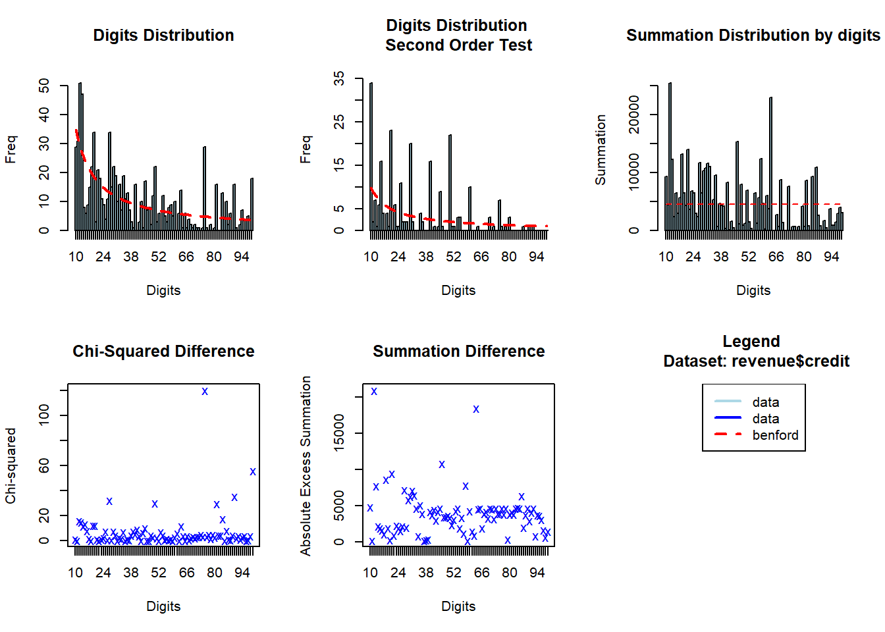
getSuspects(bfd.cp, revenue, by = "absolute.diff", how.many = 1) %>% as_tibble()> # A tibble: 29 x 14
> account subaccount type date num name memo split debit credit
> <chr> <chr> <chr> <date> <chr> <chr> <chr> <chr> <dbl> <dbl>
> 1 Revenue Revenue Invoice 2018-03-26 71065 Godwin~ Drop ~ Acco~ 0 75.6
> 2 Revenue Revenue Invoice 2018-03-26 71065 Godwin~ Cand.~ Acco~ 0 75.6
> 3 Revenue Revenue Invoice 2018-04-22 71064 Godwin~ Drop ~ Acco~ 0 75.6
> 4 Revenue Revenue Invoice 2018-04-22 71064 Godwin~ Cand.~ Acco~ 0 75.6
> 5 Revenue Revenue Invoice 2018-04-28 71066 Godwin~ Drop ~ Acco~ 0 75.6
> 6 Revenue Revenue Invoice 2018-04-28 71066 Godwin~ Cand.~ Acco~ 0 75.6
> 7 Revenue Revenue Invoice 2018-04-28 71067 Dan A.~ Fluor~ Acco~ 0 75
> 8 Revenue Revenue Invoice 2018-05-10 71068 Godwin~ Drop ~ Acco~ 0 75.6
> 9 Revenue Revenue Invoice 2018-05-10 71068 Godwin~ Cand.~ Acco~ 0 75.6
> 10 Revenue Revenue Invoice 2018-05-16 71095 Miscel~ Penda~ Acco~ 0 75
> # ... with 19 more rows, and 4 more variables: balance <dbl>, weekday <ord>,
> # month <ord>, quarter <fct>revenue %>%
dplyr::filter(credit >= 10) %>%
group_by(credit) %>%
summarise(freq = n()) %>%
arrange(desc(freq)) %>%
mutate(first_two = sapply(credit, function(x) substring(x, first = c(1), last = c(2)))) %>%
count(first_two, sort = TRUE) > # A tibble: 78 x 2
> first_two n
> <chr> <int>
> 1 12 12
> 2 13 9
> 3 11 7
> 4 18 7
> 5 19 7
> 6 10 6
> 7 21 6
> 8 22 6
> 9 28 6
> 10 14 5
> # ... with 68 more rows5.4.4 Outlier
revenue[which(revenue$credit %in% c(boxplot.stats(revenue$credit)$out)), ]> # A tibble: 105 x 14
> account subaccount type date num name memo split debit credit
> <chr> <chr> <chr> <date> <chr> <chr> <chr> <chr> <dbl> <dbl>
> 1 Revenue Revenue Invoice 2018-01-14 71050 Godwi~ Pearl ~ Acco~ 0 2375
> 2 Revenue Revenue Invoice 2018-01-14 71050 Godwi~ Roman ~ Acco~ 0 850
> 3 Revenue Revenue Invoice 2018-01-14 71050 Godwi~ Tiffan~ Acco~ 0 1020
> 4 Revenue Revenue Invoice 2018-01-14 71050 Godwi~ River ~ Acco~ 0 1800
> 5 Revenue Revenue Invoice 2018-01-29 71124 Kern ~ Burnis~ Acco~ 0 8400
> 6 Revenue Revenue Invoice 2018-02-01 71121 Kern ~ 18x8x1~ Acco~ 0 1320
> 7 Revenue Revenue Invoice 2018-02-01 71121 Kern ~ 18x8x1~ Acco~ 0 1980
> 8 Revenue Revenue Invoice 2018-02-01 71121 Kern ~ Solid ~ Acco~ 0 1260
> 9 Revenue Revenue Invoice 2018-02-01 71121 Kern ~ White,~ Acco~ 0 960
> 10 Revenue Revenue Invoice 2018-02-10 71051 Cole ~ Golden~ Acco~ 0 1890
> # ... with 95 more rows, and 4 more variables: balance <dbl>, weekday <ord>,
> # month <ord>, quarter <fct>subset(revenue, revenue$credit %in% boxplot(revenue$credit ~ revenue$month)$out) > # A tibble: 96 x 14
> account subaccount type date num name memo split debit credit
> <chr> <chr> <chr> <date> <chr> <chr> <chr> <chr> <dbl> <dbl>
> 1 Revenue Revenue Invoice 2018-01-14 71050 Godwi~ Pearl ~ Acco~ 0 2375
> 2 Revenue Revenue Invoice 2018-01-14 71050 Godwi~ Roman ~ Acco~ 0 850
> 3 Revenue Revenue Invoice 2018-01-14 71050 Godwi~ Tiffan~ Acco~ 0 1020
> 4 Revenue Revenue Invoice 2018-01-14 71050 Godwi~ River ~ Acco~ 0 1800
> 5 Revenue Revenue Invoice 2018-01-29 71124 Kern ~ Burnis~ Acco~ 0 8400
> 6 Revenue Revenue Invoice 2018-02-01 71121 Kern ~ 18x8x1~ Acco~ 0 1320
> 7 Revenue Revenue Invoice 2018-02-01 71121 Kern ~ 18x8x1~ Acco~ 0 1980
> 8 Revenue Revenue Invoice 2018-02-01 71121 Kern ~ Solid ~ Acco~ 0 1260
> 9 Revenue Revenue Invoice 2018-02-01 71121 Kern ~ White,~ Acco~ 0 960
> 10 Revenue Revenue Invoice 2018-02-10 71051 Cole ~ Golden~ Acco~ 0 1890
> # ... with 86 more rows, and 4 more variables: balance <dbl>, weekday <ord>,
> # month <ord>, quarter <fct>revenue %>% dplyr::filter(credit > quantile(credit, prob = .95))> # A tibble: 41 x 14
> account subaccount type date num name memo split debit credit
> <chr> <chr> <chr> <date> <chr> <chr> <chr> <chr> <dbl> <dbl>
> 1 Revenue Revenue Invoice 2018-01-14 71050 Godwi~ Pearl ~ Acco~ 0 2375
> 2 Revenue Revenue Invoice 2018-01-29 71124 Kern ~ Burnis~ Acco~ 0 8400
> 3 Revenue Revenue Invoice 2018-03-28 71071 Dan A~ Domes,~ Acco~ 0 4500
> 4 Revenue Revenue Invoice 2018-03-28 71125 Kern ~ Vianne~ Acco~ 0 2900
> 5 Revenue Revenue Invoice 2018-03-28 71125 Kern ~ Cand. ~ Acco~ 0 5600
> 6 Revenue Revenue Invoice 2018-04-13 71126 Kern ~ Golden~ Acco~ 0 12600
> 7 Revenue Revenue Invoice 2018-04-28 71067 Dan A~ Bevele~ Acco~ 0 2400
> 8 Revenue Revenue Invoice 2018-04-28 71067 Dan A~ Flush ~ Acco~ 0 2975
> 9 Revenue Revenue Invoice 2018-05-22 71127 Kern ~ Domes,~ Acco~ 0 6750
> 10 Revenue Revenue Invoice 2018-06-10 71128 Kern ~ Fluore~ Acco~ 0 4500
> # ... with 31 more rows, and 4 more variables: balance <dbl>, weekday <ord>,
> # month <ord>, quarter <fct>subset(revenue,
revenue$credit > (quantile(revenue$credit, .25) - 1.5*IQR(revenue$credit)) &
revenue$credit < (quantile(revenue$credit, .75) + 1.5*IQR(revenue$credit)))> # A tibble: 742 x 14
> account subaccount type date num name memo split debit credit
> <chr> <chr> <chr> <date> <chr> <chr> <chr> <chr> <dbl> <dbl>
> 1 Revenue Revenue Invoice 2018-01-06 71047 Baker~ Pearl ~ Acco~ 0 570
> 2 Revenue Revenue Invoice 2018-01-06 71047 Baker~ Black ~ Acco~ 0 84
> 3 Revenue Revenue Invoice 2018-01-06 71047 Baker~ Bevele~ Acco~ 0 144
> 4 Revenue Revenue Invoice 2018-01-06 71047 Baker~ Tiffan~ Acco~ 0 510
> 5 Revenue Revenue Invoice 2018-01-06 71047 Baker~ Burnis~ Acco~ 0 600
> 6 Revenue Revenue Invoice 2018-01-06 71047 Baker~ Specia~ Acco~ 0 55
> 7 Revenue Revenue Invoice 2018-01-06 71047 Baker~ Pendan~ Acco~ 0 50
> 8 Revenue Revenue Invoice 2018-01-06 71047 Baker~ Verona~ Acco~ 0 300
> 9 Revenue Revenue Invoice 2018-01-06 71047 Baker~ Haloge~ Acco~ 0 12
> 10 Revenue Revenue Invoice 2018-01-06 71047 Baker~ Cand. ~ Acco~ 0 56
> # ... with 732 more rows, and 4 more variables: balance <dbl>, weekday <ord>,
> # month <ord>, quarter <fct>revenue[which(ecdf(revenue$credit)(revenue$credit) > 0.95), ] > # A tibble: 44 x 14
> account subaccount type date num name memo split debit credit
> <chr> <chr> <chr> <date> <chr> <chr> <chr> <chr> <dbl> <dbl>
> 1 Revenue Revenue Invoice 2018-01-14 71050 Godwi~ Pearl ~ Acco~ 0 2375
> 2 Revenue Revenue Invoice 2018-01-29 71124 Kern ~ Burnis~ Acco~ 0 8400
> 3 Revenue Revenue Invoice 2018-03-28 71071 Dan A~ Domes,~ Acco~ 0 4500
> 4 Revenue Revenue Invoice 2018-03-28 71125 Kern ~ Vianne~ Acco~ 0 2900
> 5 Revenue Revenue Invoice 2018-03-28 71125 Kern ~ Cand. ~ Acco~ 0 5600
> 6 Revenue Revenue Invoice 2018-04-13 71126 Kern ~ Golden~ Acco~ 0 12600
> 7 Revenue Revenue Invoice 2018-04-28 71067 Dan A~ Coloni~ Acco~ 0 2100
> 8 Revenue Revenue Invoice 2018-04-28 71067 Dan A~ Bevele~ Acco~ 0 2400
> 9 Revenue Revenue Invoice 2018-04-28 71067 Dan A~ Flush ~ Acco~ 0 2975
> 10 Revenue Revenue Invoice 2018-05-22 71127 Kern ~ Domes,~ Acco~ 0 6750
> # ... with 34 more rows, and 4 more variables: balance <dbl>, weekday <ord>,
> # month <ord>, quarter <fct>revenue[which(abs(scale(revenue$credit)) > 1.96), ] > # A tibble: 33 x 14
> account subaccount type date num name memo split debit credit
> <chr> <chr> <chr> <date> <chr> <chr> <chr> <chr> <dbl> <dbl>
> 1 Revenue Revenue Invoice 2018-01-29 71124 Kern ~ Burnis~ Acco~ 0 8400
> 2 Revenue Revenue Invoice 2018-03-28 71071 Dan A~ Domes,~ Acco~ 0 4500
> 3 Revenue Revenue Invoice 2018-03-28 71125 Kern ~ Vianne~ Acco~ 0 2900
> 4 Revenue Revenue Invoice 2018-03-28 71125 Kern ~ Cand. ~ Acco~ 0 5600
> 5 Revenue Revenue Invoice 2018-04-13 71126 Kern ~ Golden~ Acco~ 0 12600
> 6 Revenue Revenue Invoice 2018-04-28 71067 Dan A~ Flush ~ Acco~ 0 2975
> 7 Revenue Revenue Invoice 2018-05-22 71127 Kern ~ Domes,~ Acco~ 0 6750
> 8 Revenue Revenue Invoice 2018-06-10 71128 Kern ~ Fluore~ Acco~ 0 4500
> 9 Revenue Revenue Invoice 2018-07-13 71119 Kern ~ Golden~ Acco~ 0 3150
> 10 Revenue Revenue Invoice 2018-07-13 71119 Kern ~ Burnis~ Acco~ 0 3000
> # ... with 23 more rows, and 4 more variables: balance <dbl>, weekday <ord>,
> # month <ord>, quarter <fct>revenue %>%
mutate(z_score = scale(credit),
z_label = ifelse(abs(z_score - mean(z_score)) > 2*sd(z_score), "z", "ok")) %>%
dplyr::filter(z_label == "z") %>%
ggplot() +
geom_point(aes(credit, month, size = credit > 6000), alpha = .5) +
geom_point(aes(credit, month, color = "red")) +
geom_vline(xintercept = 6000, lty = 2, col = "red", size = 1) +
ggrepel::geom_text_repel(data = subset(revenue, credit > 6000),
aes(credit, month, label = name),
col = "steelblue",
size = 3) +
scale_x_continuous(labels = scales::comma_format()) +
scale_colour_manual(values = c("red"), guide = FALSE) +
scale_size_manual(values = c(1, 3), guide = FALSE) +
annotate("text", x = 6200, y = 6, label = "6,000", size = 3) +
theme(legend.position = "none") +
theme_minimal() +
labs(title = "Identification of sales outlier based on Z-score",
x = NULL, y = NULL) 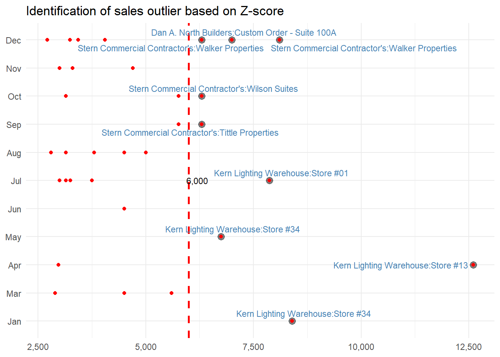
5.4.5 Ratios
Remove any rows containing 0 in monthly financial statements, and then perform horizontal and vertical ratio analysis. The final result is present in a formatted table.
mth_fs[apply(mth_fs[-c(1:2)], 1, function(x) all(x != 0)), ] > # A tibble: 30 x 14
> account subaccount Jan Feb Mar Apr May Jun Jul
> <chr> <chr> <dbl> <dbl> <dbl> <dbl> <dbl> <dbl> <dbl>
> 1 Accounts ~ Accounts Pay~ -3.59e4 -45421 -21732. -23299 -3916. -6852. -4067.
> 2 Accounts ~ Accounts Rec~ 2.24e4 10455. 16399. 16583. 21162. 26078. 38024.
> 3 Accumulat~ Accumulated ~ -7.69e1 -154. -231. -308. -385. -462. -538.
> 4 Car/Truck~ Car Lease 5.63e2 1126 1689 2252 2815 3378 3941
> 5 Car/Truck~ Insurance-Au~ 1.2 e2 240 360 480 600 720 840
> 6 Company C~ Company Chec~ 2.14e4 25957. 44125. 7784. 35514. 76992. 42187.
> 7 Deborah W~ Deborah Wood~ 1.05e4 22750 32750 44500 56500 67750 77750
> 8 Depreciat~ Depreciation~ 7.69e1 154. 231. 308. 385. 462. 538.
> 9 Direct La~ Wages - Ware~ 8.1 e2 2430 4050 5670 7290 8910 10530
> 10 Insurance General Liab~ 2.3 e2 460 690 920 1150 1380 1610
> # ... with 20 more rows, and 5 more variables: Aug <dbl>, Sep <dbl>, Oct <dbl>,
> # Nov <dbl>, Dec <dbl>mth_fs %>%
rowwise() %>%
dplyr::filter(all(c_across(-c(account, subaccount)) != 0))> # A tibble: 30 x 14
> # Rowwise:
> account subaccount Jan Feb Mar Apr May Jun Jul
> <chr> <chr> <dbl> <dbl> <dbl> <dbl> <dbl> <dbl> <dbl>
> 1 Accounts ~ Accounts Pay~ -3.59e4 -45421 -21732. -23299 -3916. -6852. -4067.
> 2 Accounts ~ Accounts Rec~ 2.24e4 10455. 16399. 16583. 21162. 26078. 38024.
> 3 Accumulat~ Accumulated ~ -7.69e1 -154. -231. -308. -385. -462. -538.
> 4 Car/Truck~ Car Lease 5.63e2 1126 1689 2252 2815 3378 3941
> 5 Car/Truck~ Insurance-Au~ 1.2 e2 240 360 480 600 720 840
> 6 Company C~ Company Chec~ 2.14e4 25957. 44125. 7784. 35514. 76992. 42187.
> 7 Deborah W~ Deborah Wood~ 1.05e4 22750 32750 44500 56500 67750 77750
> 8 Depreciat~ Depreciation~ 7.69e1 154. 231. 308. 385. 462. 538.
> 9 Direct La~ Wages - Ware~ 8.1 e2 2430 4050 5670 7290 8910 10530
> 10 Insurance General Liab~ 2.3 e2 460 690 920 1150 1380 1610
> # ... with 20 more rows, and 5 more variables: Aug <dbl>, Sep <dbl>, Oct <dbl>,
> # Nov <dbl>, Dec <dbl>mth_fs_0 <- mth_fs %>%
select(-account) %>%
rowwise() %>%
dplyr::filter(all(c_across(-c(subaccount)) != 0)) %>%
column_to_rownames('subaccount')
cogs_sales <- mth_fs_0["Purchases (Cost of Goods)", ] / abs(mth_fs_0['Revenue', ])
inventory_cogs <- mth_fs_0["Purchases (Cost of Goods)", ] / mth_fs_0['Inventory Asset', ]
mth_fs_0_ratio <- mth_fs_0 %>%
add_row(cogs_sales) %>%
add_row(inventory_cogs) %>%
rownames_to_column("Subaccount")
mth_fs_0_ratio[31, "Subaccount"] <- "COGS/Sales"
mth_fs_0_ratio[32, "Subaccount"] <- "COGS/Inventory"report_tbl <- mth_fs_0_ratio %>%
dplyr::filter(
Subaccount %in% c("Revenue", "Purchases (Cost of Goods)", "Inventory Asset", "COGS/Sales", "COGS/Inventory")
) %>%
mutate(
Jan_Feb = (Feb - Jan)/Jan,
Feb_Mar = (Mar - Feb)/Feb,
Mar_Apr = (Apr - Mar)/Mar,
Apr_May = (May - Apr)/Apr,
May_Jun = (Jun - May)/May,
Jun_Jul = (Jul - Jun)/Jun,
Jul_Aug = (Aug - Jul)/Jul,
Aug_Sep = (Sep - Aug)/Aug,
Sep_Oct = (Oct - Sep)/Sep,
Oct_Nov = (Nov - Oct)/Oct,
Nov_Dec = (Dec - Nov)/Nov
) %>%
select(-c(Jan:Dec)) %>%
mutate(across(-c(Subaccount), ~formattable::comma(round(abs(.x), 2))))
report_tbl %>%
kableExtra::kbl(caption = "Horizontal and Vertical Analysis") %>%
kableExtra::kable_paper("hover", full_width = FALSE) %>%
kableExtra::add_header_above(c("Financial Year ended as at 31/12/2018" = 12),
background = "teal",
color = "white",
bold = TRUE,
align = "left") %>%
kableExtra::row_spec(4:5, color = "white", background = "pink") %>%
kableExtra::column_spec(2, color = "white",
background = "pink") %>%
kableExtra::footnote(symbol = c("COGS and Revenue decrease over the period; ",
"COGS/Inventory decrease over the period; "),
footnote_as_chunk = FALSE)knitr::include_graphics("img/ratio_tbl.png")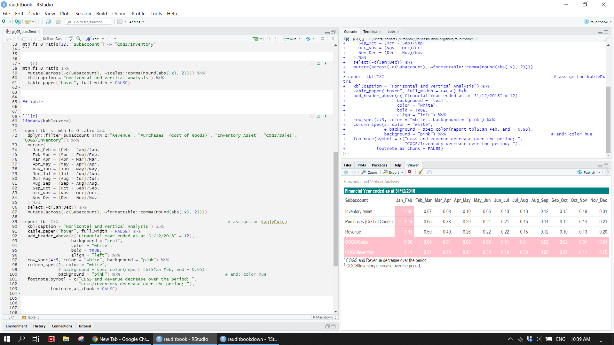
5.4.6 Cutomers
Identify Top 10 customers based on total sales amount.
revenue %>%
count(name, wt = credit, sort = TRUE) > # A tibble: 54 x 2
> name n
> <chr> <dbl>
> 1 Kern Lighting Warehouse:Store #13 37725
> 2 Kern Lighting Warehouse:Store #01 34929
> 3 Kern Lighting Warehouse:Store #34 34625.
> 4 Kern Lighting Warehouse:Store #45 30675
> 5 Cole Home Builders:Phase 1 - Lot 5 25877.
> 6 Stern Commercial Contractor's:Walker Properties 21330
> 7 Stern Commercial Contractor's:Tittle Properties 17433
> 8 Thompson Lighting Stores:Store #15 14825
> 9 Stern Commercial Contractor's:Wilson Suites 14355
> 10 Cole Home Builders:Phase 2 - Lot 5 13973.
> # ... with 44 more rowsrevenue %>%
mutate(name = fct_lump(name, 10, w = credit),
name = fct_reorder(name, credit, sum)) %>%
ggplot(aes(credit, name)) +
geom_col() +
scale_x_continuous(label = scales::comma) +
labs(x = "", y = "") +
theme_light()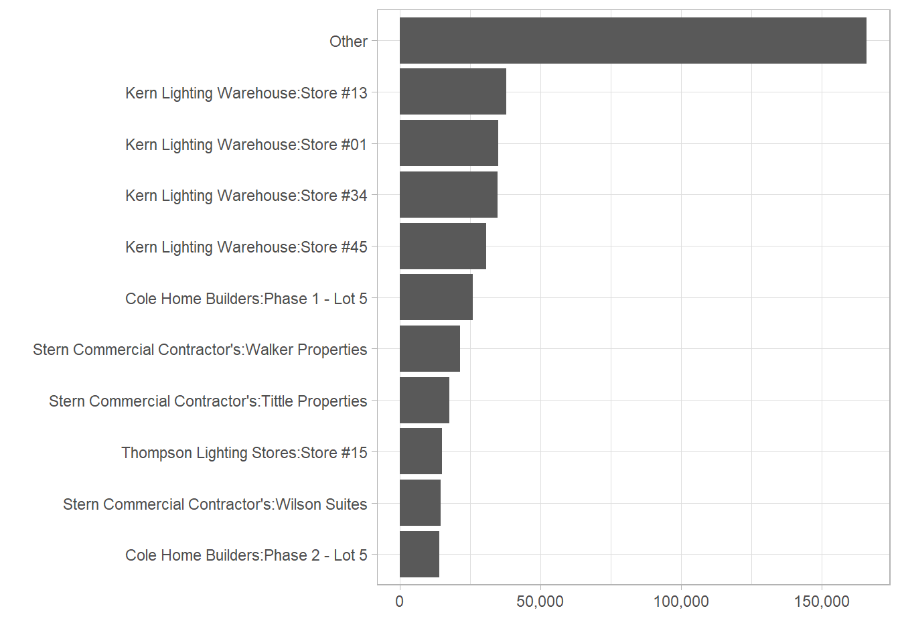
summarize a table for customers, which includes how much they purchased on weekends.
revenue %>%
group_by(name) %>%
arrange(date) %>%
summarise(n = n(),
across(credit, tibble::lst(sum, sd, mean, median, min, max, first, last)),
weekend_n = length(credit[weekday %in% c("Sat", "Sun")]),
weekend_sum = sum(credit[weekday %in% c("Sat", "Sun")]),
.groups = "drop") > # A tibble: 54 x 12
> name n credit_sum credit_sd credit_mean credit_median credit_min
> <chr> <int> <dbl> <dbl> <dbl> <dbl> <dbl>
> 1 Baker's Prof~ 7 2391 284. 342. 232 50
> 2 Baker's Prof~ 13 12718. 1175. 978. 582 22
> 3 Baker's Prof~ 17 3307 155. 195. 210 9
> 4 Baker's Prof~ 8 1872 249. 234 129 11
> 5 Baker's Prof~ 10 2381 237. 238. 114 12
> 6 Cole Home Bu~ 17 2187. 124. 129. 86.4 4.95
> 7 Cole Home Bu~ 17 2187. 124. 129. 86.4 4.95
> 8 Cole Home Bu~ 196 25877. 96.0 132. 104. 4.95
> 9 Cole Home Bu~ 81 13973. 250. 173. 112 4.95
> 10 Dan A. North~ 1 7000 NA 7000 7000 7000
> # ... with 44 more rows, and 5 more variables: credit_max <dbl>,
> # credit_first <dbl>, credit_last <dbl>, weekend_n <int>, weekend_sum <dbl>Relative size factor (RSF) compares the biggest sales to the second biggest sales.
revenue %>%
group_by(name) %>%
arrange(desc(credit)) %>%
slice(1:2) %>%
mutate(rsf = round(credit / dplyr::lag(credit), digits = 3)) %>%
dplyr::filter(rsf < 0.5) > # A tibble: 6 x 15
> # Groups: name [6]
> account subaccount type date num name memo split debit credit
> <chr> <chr> <chr> <date> <chr> <chr> <chr> <chr> <dbl> <dbl>
> 1 Revenue Revenue Invoice 2018-03-28 71071 Dan A.~ Flat G~ Acco~ 0 1875
> 2 Revenue Revenue Invoice 2018-11-01 71120 Kern L~ 18x8x1~ Acco~ 0 3300
> 3 Revenue Revenue Invoice 2018-02-28 71122 Lavery~ Custom~ Acco~ 0 600
> 4 Revenue Revenue Invoice 2018-09-25 71100 Miscel~ Verona~ Acco~ 0 600
> 5 Revenue Revenue Invoice 2018-12-10 71105 Miscel~ Chestn~ Acco~ 0 325
> 6 Revenue Revenue Invoice 2018-04-10 71057 Miscel~ Domes,~ Acco~ 0 180
> # ... with 5 more variables: balance <dbl>, weekday <ord>, month <ord>,
> # quarter <fct>, rsf <dbl>revenue %>%
nest(data = -c(name)) %>%
mutate(max_sales = map(data, ~max(.x['credit']))) %>%
unnest(max_sales)> # A tibble: 54 x 3
> name data max_sales
> <chr> <list> <dbl>
> 1 Baker's Professional Lighting:Store #25 <tbl_df [10 x 13]> 600
> 2 Godwin Lighting Depot:Store #202 <tbl_df [19 x 13]> 2375
> 3 Miscellaneous - Retail:Ms. Jann Minor <tbl_df [6 x 13]> 350
> 4 Miscellaneous - Retail:Brian Stern <tbl_df [6 x 13]> 300
> 5 Miscellaneous - Retail:Alison Johnson <tbl_df [4 x 13]> 400
> 6 Cole Home Builders:Phase 2 - Lot 5 <tbl_df [81 x 13]> 1890
> 7 Kern Lighting Warehouse:Store #34 <tbl_df [21 x 13]> 8400
> 8 Godwin Lighting Depot:Store #303 <tbl_df [38 x 13]> 585
> 9 Thompson Lighting Stores:Store #15 <tbl_df [27 x 13]> 2170
> 10 Cole Home Builders:Phase 1 - Lot 2 <tbl_df [17 x 13]> 367.
> # ... with 44 more rowsrevenue %>%
split(.$name) %>%
sapply(function(x) max(x$credit)) %>%
as.data.frame()> .
> Baker's Professional Lighting:Store #05 850.0
> Baker's Professional Lighting:Store #10 3432.0
> Baker's Professional Lighting:Store #15 600.0
> Baker's Professional Lighting:Store #20 630.0
> Baker's Professional Lighting:Store #25 600.0
> Cole Home Builders:Phase 1 - Lot 2 367.2
> Cole Home Builders:Phase 1 - Lot 4 367.2
> Cole Home Builders:Phase 1 - Lot 5 367.2
> Cole Home Builders:Phase 2 - Lot 5 1890.0
> Dan A. North Builders:Custom Order - Suite 100A 7000.0
> Dan A. North Builders:McCarthy Properties 4500.0
> Dan A. North Builders:Turner Suites 5000.0
> Dan A. North Builders:Wagner Suites 2975.0
> Godwin Lighting Depot:Store #1020 585.0
> Godwin Lighting Depot:Store #202 2375.0
> Godwin Lighting Depot:Store #303 585.0
> Godwin Lighting Depot:Store #404 585.0
> Godwin Lighting Depot:Store #909 585.0
> Kern Lighting Warehouse:Store #01 7875.0
> Kern Lighting Warehouse:Store #13 12600.0
> Kern Lighting Warehouse:Store #34 8400.0
> Kern Lighting Warehouse:Store #45 5600.0
> Lavery Lighting & Design:Store #JL-01 1020.0
> Lavery Lighting & Design:Store #JL-04 2500.0
> Lavery Lighting & Design:Store #JL-06 1860.0
> Lavery Lighting & Design:Store #JL-08 1275.0
> Miscellaneous - Retail:Alison Johnson 400.0
> Miscellaneous - Retail:Anne Loomis 680.0
> Miscellaneous - Retail:Brian Stern 300.0
> Miscellaneous - Retail:Carlos Nazar 620.0
> Miscellaneous - Retail:David Lo 650.0
> Miscellaneous - Retail:Doug Jacobsen 900.0
> Miscellaneous - Retail:Jann Minor 975.0
> Miscellaneous - Retail:Jason Helper 700.0
> Miscellaneous - Retail:John Huhn 1275.0
> Miscellaneous - Retail:Lara Gussman 748.0
> Miscellaneous - Retail:Melanie Hall 500.0
> Miscellaneous - Retail:Mr. Fred Kaseman 620.0
> Miscellaneous - Retail:Mr. Jay Jessen 975.0
> Miscellaneous - Retail:Mrs. Anne Hemp 600.0
> Miscellaneous - Retail:Mrs. Chris Holly 500.0
> Miscellaneous - Retail:Ms. Jann Minor 350.0
> Miscellaneous - Retail:Peter Karpas 680.0
> Miscellaneous - Retail:Ruth Kuver 650.0
> Miscellaneous - Retail:Sean Martin 750.0
> Miscellaneous - Retail:Valesha Jones 945.0
> Stern Commercial Contractor's:Tittle Properties 6300.0
> Stern Commercial Contractor's:Walker Properties 8100.0
> Stern Commercial Contractor's:Wilson Suites 6300.0
> Thompson Lighting Stores:Store #15 2170.0
> Thompson Lighting Stores:Store #20 475.0
> Thompson Lighting Stores:Store #30 475.0
> Thompson Lighting Stores:Store #40 475.0
> Thompson Lighting Stores:Store #50 475.0revenue %>%
group_by(name) %>%
dplyr::filter(cumany(credit > 5000)) %>%
summarise(range_credit = range(credit)) > # A tibble: 16 x 2
> # Groups: name [8]
> name range_credit
> <chr> <dbl>
> 1 Dan A. North Builders:Custom Order - Suite 100A 7000
> 2 Dan A. North Builders:Custom Order - Suite 100A 7000
> 3 Kern Lighting Warehouse:Store #01 75
> 4 Kern Lighting Warehouse:Store #01 7875
> 5 Kern Lighting Warehouse:Store #13 0
> 6 Kern Lighting Warehouse:Store #13 12600
> 7 Kern Lighting Warehouse:Store #34 58
> 8 Kern Lighting Warehouse:Store #34 8400
> 9 Kern Lighting Warehouse:Store #45 55
> 10 Kern Lighting Warehouse:Store #45 5600
> 11 Stern Commercial Contractor's:Tittle Properties 198
> 12 Stern Commercial Contractor's:Tittle Properties 6300
> 13 Stern Commercial Contractor's:Walker Properties 1350
> 14 Stern Commercial Contractor's:Walker Properties 8100
> 15 Stern Commercial Contractor's:Wilson Suites 5760
> 16 Stern Commercial Contractor's:Wilson Suites 6300Perform the customer churn analysis and identify one time customers based on specific characteristics.
revenue %>%
select(date, name, credit) %>%
mutate(date = lubridate::ceiling_date(date, "day")) %>%
group_by(name) %>%
mutate(revenue = sum(credit),
last_visit = last(date),
last_days = as.double(as.Date("2018-12-31") - last_visit),
orders = n()) %>%
select(-c(date, credit)) %>%
distinct(last_visit, .keep_all = TRUE) %>%
ggplot(aes(last_days, orders, size = revenue)) +
geom_point() +
geom_text(aes(label = paste0 (name, " | ", last_visit)),
hjust = 0, vjust = 1,
check_overlap = TRUE, size = 3, col = "steelblue") +
scale_x_continuous(labels = function(x) paste0(x, "/days")) +
scale_y_continuous(labels = function(x) paste0(x, "/orders")) +
scale_size_continuous(name = "Revenue", labels = scales::comma_format()) +
theme_minimal() +
theme(legend.justification = c(1, 1),
legend.position = c(0.95, 0.95),
legend.background = element_blank()) +
labs(x = "", y = "")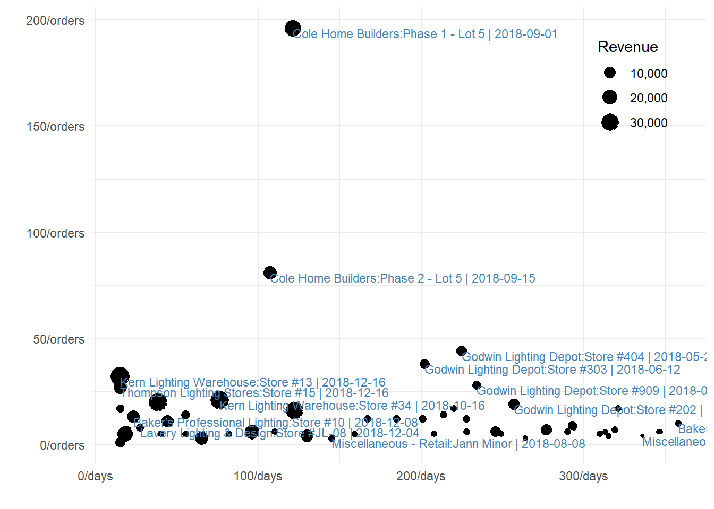
# prcomp()5.5 Substantive test
gl_df %>%
dplyr::filter(subaccount %in% c("Revenue", "Accounts Receivable")) %>%
group_by(subaccount, month) %>%
summarise_at(vars(debit, credit), sum) %>%
mutate(amt = case_when(subaccount == "Accounts Receivable" ~ debit - credit,
subaccount == "Revenue" ~ credit - debit)) %>%
ggplot(aes(month, amt, color = subaccount)) +
geom_point(show.legend = FALSE) +
geom_path(aes(group = subaccount), show.legend = FALSE) +
geom_hline(yintercept = 0, lty = 2, col = "black", size = 1) +
scale_y_continuous(breaks = seq(-30000, 80000, 10000), labels = scales::comma_format()) +
theme_light() +
labs(title = "Monthly movement for FY2018",
x = NULL,
y = NULL,
color = "") 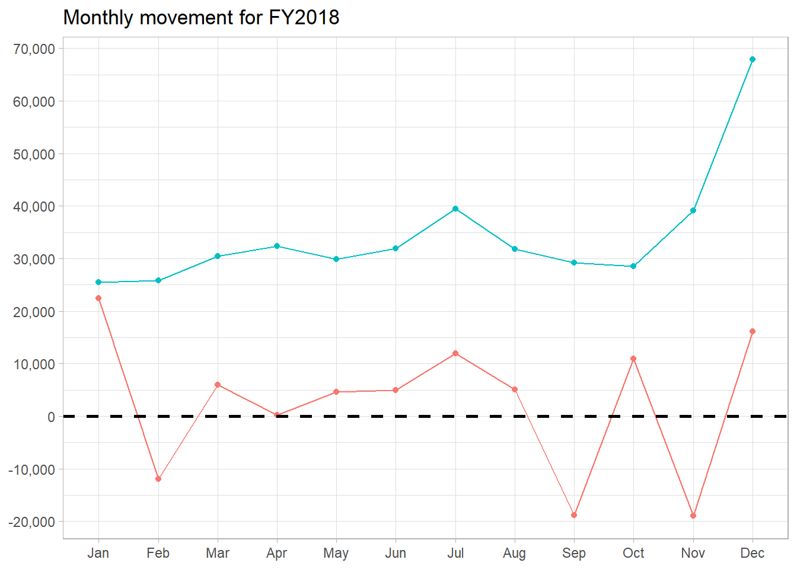
5.5.1 Reconcilation
Reconcile revenue to account receivables as of year end. Ensure that sub ledger agrees to GL by check total and cross check.
gl_df %>%
dplyr::filter(subaccount == "Accounts Receivable") %>%
summarise(across(c(debit, credit), sum), .groups = "drop") > # A tibble: 1 x 2
> debit credit
> <dbl> <dbl>
> 1 408310. 375976.reconcilation <- gl_df %>%
dplyr::filter(subaccount %in% c("Revenue", "Accounts Receivable")) %>%
group_by(name, subaccount) %>%
summarise(across(c(debit, credit), sum), .groups = "drop") %>%
mutate(confirmation = ifelse(subaccount == "Revenue", credit - debit, debit - credit)) %>%
spread(subaccount, confirmation, fill = 0) %>%
mutate(client = word(name))
reconcilation %>%
group_by("Client" = client) %>%
summarise(across(c(Revenue, `Accounts Receivable`), sum), .groups = "drop") %>%
janitor::adorn_totals()> Client Revenue Accounts Receivable
> Baker's 22669.48 12102.48
> Cole 44225.00 0.00
> Dan 37119.00 3500.00
> Godwin 31699.85 0.00
> Kern 137953.60 2222.50
> Lavery 24996.60 2708.10
> Miscellaneous 33103.00 0.00
> Stern 53118.00 0.00
> Thompson 26925.00 11800.00
> Total 411809.53 32333.085.5.2 Aging report
age_customer <- reconcilation %>%
dplyr::filter(`Accounts Receivable` != 0) %>%
pull(name)
age_inv <- gl_df %>%
dplyr::filter(subaccount == "Accounts Receivable", name %in% age_customer) %>%
group_by(name) %>%
mutate(index = map(debit, ~case_when(.x == 0 ~ 2,
.x == credit ~ 1)),
unpaid = map_dbl(index, sum, na.rm = TRUE)) %>%
dplyr::filter(unpaid == 0) %>%
mutate(age = ifelse((date + lubridate::days(30)) < as.Date("2019-1-31"), "Ok", "Overdue")) library(kableExtra)
age_inv %>%
select(account, type, date, num, name, debit, credit) %>%
mutate(across(c(debit, credit), ~ scales::comma(round(.x)))) %>%
rename_with(toupper) %>%
kable(caption = "RAudit Solution LLP") %>%
kable_styling(full_width = FALSE, font_size = 12) %>%
add_header_above(c("Financial Year ended as at 31/12/2018" = 7),
background = "teal", color = "white", bold = TRUE, align = "left") %>%
column_spec(1, bold = TRUE) %>%
collapse_rows(columns = c(1), valign = "middle") %>%
footnote(title_format = c("italic", "underline"),
general = "Please return the confirmation letter to us as soon as possible.")knitr::include_graphics("img/age_report.png")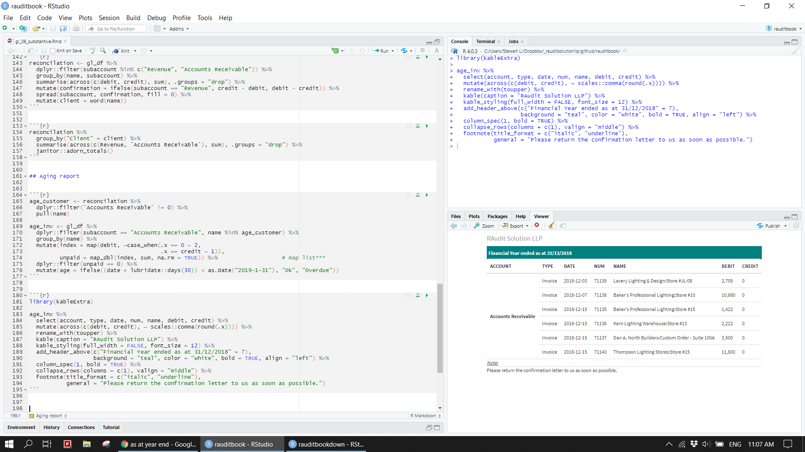
5.5.3 Confirmation letter
Produce confirmation letters for all customers with due account receivable amount in one go.
tibble(customer = unique(age_inv$name),
filename = here::here(paste0("confirmation/", "confirmation_", seq(length(unique(age_inv$name))), ".html")),
params = map(customer, ~ list(customer = .))) %>%
select(output_file = filename, params) %>%
pwalk(rmarkdown::render, input = here::here("confirmation/confirmation.Rmd"), "html_document", envir = new.env())
paste0("confirmation/", list.files(here::here("confirmation"), "*.html")) %>%
map(file.remove)knitr::include_graphics("img/confirm_letter.png")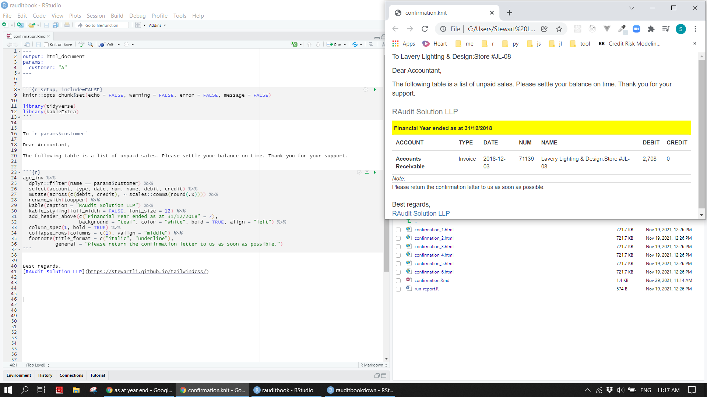
5.6 Reporting
Audit report needs to be filled up with numbers after finalized draft financial statements.
fload <- function(df, cell){
pos <- strsplit(cell, split = '_') %>% unlist()
df %>%
dplyr::filter(table == pos[1], row_number() == pos[2]) %>%
select(pos[3]) %>%
pull()
}df <- head(mtcars) %>%
rownames_to_column('car') %>%
mutate(table = 'table1') knitr::include_graphics("img/audit_report.png")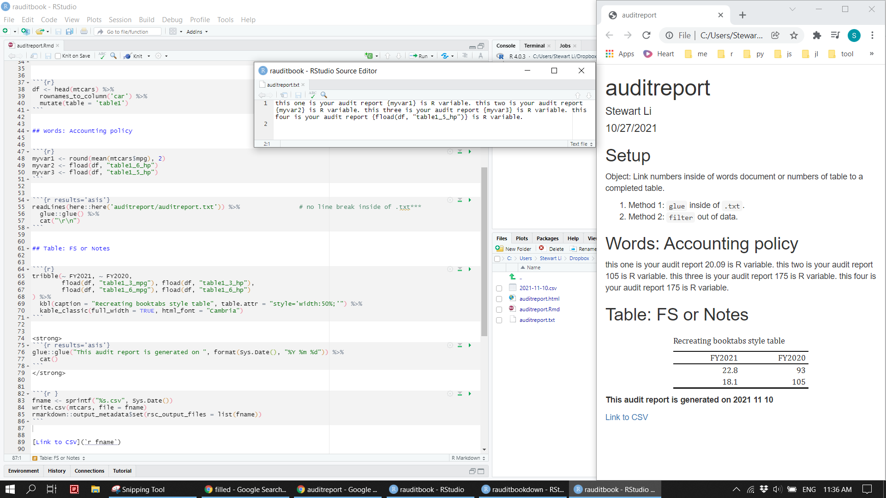